Saint Jean Baptiste
revu le 30 septembre 2005
Plan : I. introduction - II. Saint Jean : une lecture hermétique : 1. Vision de Zacharie - 2. Visitation de Marie à Elisabeth - 3. Nativité de saint Jean - 4. le Désert - 5. l'auditoire de Jean - 6. Prédication et Baptême - 7. Décollation de saint Jean - III. Fragments sacrés : une lecture artistique : 1. des Catacombes au Jourdain - 2. les instruments de l'Art - 3. un Mutus Liber ignoré : a. les ailes, l'agneau, la peau de chameau, les jeunes pousses - b. la tête tranchée et l'invention du Chef de saint Jean -
remerciements : à Alain Mauranne qui m'a donné l'idée d'une section sur Jean le Baptiste, suite à l'envoi d'un retable consacré au saint dont on apercevra quelques volets dans le texte.
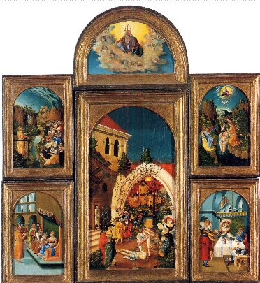
(retable de saint Jean Baptiste, Allemagne du sud, 1526)On aperçoit successivement Dieu le Père, puis de gauche à droite : la Prédication, le Baptême du christ, la Députation du Sanhédrin, la Décollation, la tête de Jean rapportée à Hérodiade.
Avertissement : dans cette section, je fais référence à saint Jean le Baptiste mais aussi à saint Jean l'Évangéliste qui sont, bien sûr, distincts. Néanmoins, un symbolisme croisé peut être mis en évidence. Le formalisme de l'intrication des symboles demande un travail de synthèse que je n'ai pas eu le temps, pour l'heure, de préparer. J'espère le mener à bien ultérieurement.
I. IntroductionNombreuses sont les références aux saints de l'Église dans les vieux traités d'alchimie. Il n'est pas jusqu'à nos Adeptes modernes qui n'aient eu des vues sur les Évangélistes. L'histoire de saint Paul et de saint Antoine a été exposée sommairement dans notre tentative d'interprétation hermétique du retable d'Issenheim et on s'en est fait l'écho dans de nombreuses pages de cette partie du site dévolue à l'Art sacré. Mais le cas de saint Jean est différent et tout à fait particulier même, unique. Il suffira, en préambule, de rappeler quelques assertions hermétiques :
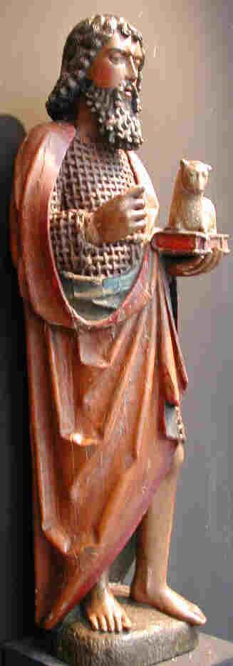
FIGURE I
Saint Jean Baptiste en noyer sculpté et polychrome (Bourgogne, 3ème tiers du XVe)Voilà d'abord quelques notes sur saint Jean l'Évangéliste :
- la pierre précieuse consacrée à saint Jean est l'émeraude ;
- son sang est associé au kermès ;
- dans la parabole de saint Jean [Apocalypse], un ange a un pied qui foule la terre tandis que l'autre tient son assise sur l'eau ;
- il annonce [retable d'Issenheim] la Résurrection, chose pourtant impossible - a priori - si l'on s'en tient à la Crucifixion désespérée de Grünewald ;
- l'animal qui lui est consacré est l'aigle, qui se rapporte à l'élément EAU [et non pas à l'AIR comme on pourrait le croire en première intention, cf. Tarot alchimique] ;
- on a dit que saint Jean l'Évangéliste faisait de l'or, et changeait les pierres les plus communes en pierres précieuses pour secourir les pauvres ;
- la Vierge est toujours associée à l'Évangéliste ;
- saint Jean figure en bonne place dans l'un des plus grands traités de l'alchimie : les Figures Hiéroglyphiques, du pseudo Flamel ; il n'est pas étranger à notre propos de rappeler cet extrait du pseudo-Flamel :«Qui voudra voir l'état de mon arrivée, et la joye de Perrenelle, qu'il nous contemple tous deux en cette Ville de Paris sur la Porte de la Chapelle de S.Jacques de la Boucherie, du côté et tout auprès de ma maison, où nous sommes peints, moi rendant grâces aux pieds de S. Jacques de Galice, et Perrenelle à ceux de S.Jean, qu'elle avoit si souvent invoqué. » [Figures Hiéroglyphiques]
Il est important ici de noter avec soin que saint Jean présente la femme de Flamel ; nous y reviendrons [cf. Vision de Zacharie] lorsque nous parlerons du rôle symbolique possible, dans l'oeuvre, de Zacharie, père de Jean et d'Elisabeth, sa mère.
- Bernard Le Trévisan parle du « merle de Jean » dans son Verbum dimissum ; le merle de
« Observez donc que quand notre Compôt commence à être abreuvé de notre Eau permanente, alors il est entièrement tourné en manière de Poix fondue, et devenu noir comme charbon ; en cet état, il est appelé la Poix noire, le Sel brûlé, le Plomb fondu, le Laiton non net, la Magnésie et le Merle de Jean ; car, durant cette Opération, on voit comme une nuée noire volant par la moyenne Région du Vaisseau au fond duquel demeure la Matière fondue en manière de Poix qui se dissout totalement. »
Jean est synonyme de « laton non net» ou de cornet, c'est-à-dire de l'Airain des Sages, première forme du Rebis [l'homme double igné de Basile Valentin, cf. Douze Clefs de Philosophie] ;
II. Saint Jean - essai de lecture hermétique
Voici d'abord quelques détails « biographiques » sur le Baptiste.
Jean le Baptiste est le fils d'Elisabeth et de Zacharie. Ce couple stérile se voit annoncer la venue de leur fils. Zacharie, qui doute, devient muet jusqu'à la naissance de l'enfant. Alors que l'on veut nommer ce dernier comme son père, Elisabeth intervient pour dire qu'il doit s'appeler Jean. Viens ensuite l'épisode de la Visitation. Jean est un prêcheur sobre, décrit de même façon par tous les évangélistes (essentiellement Marc et Matthieu). Il séjourne au désert, pratique le jeûne :Plusieurs éléments sont à retenir autour desquels vont s'organiser nos réflexions :« Jean avait un vêtement de poils de chameau, et une ceinture de cuir autour des reins. Il se nourrissait de sauterelles et de miel sauvage » (Matthieu 3.4).
Il est :
« la voix de celui qui crie dans le désert : Préparez le chemin du Seigneur, Aplanissez ses sentiers » (Matthieu, 3.3).
Initiateur d'un nouveau rite, il baptise ceux qui se repentent, d'où son surnom, le Baptiste :
« ils se faisaient baptiser par lui dans le fleuve du Jourdain » (Matthieu, 3.6).
Surtout, il annonce la venue du Christ :
« Moi, je vous baptise d'eau, pour vous amener à la repentance; mais celui qui vient après moi est plus puissant que moi, et je ne suis pas digne de porter ses souliers. Lui, il vous baptisera du Saint Esprit et de feu. » (Matthieu, 3.11).
En peinture, Jean-Baptiste est donc souvent représenté comme un être décharné, vêtu d'un peau de chameau. La sculpture ornementale est moins précise. Elle identifie
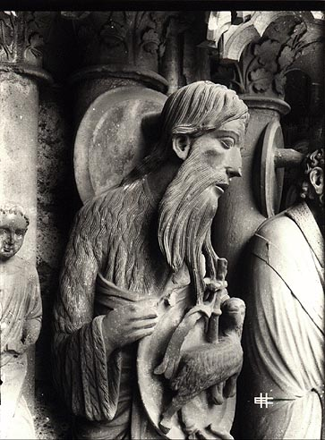
FIGURE II
(saint Jean ; façade septentrionale, portail nord, baie centrale ou baie du triomphe de la Vierge ; cathédrale de Chartres, Photo : Etienne Houvet, 1920-1940)Jean-Baptiste à son bâton de prêcheur et à un agneau contenu dans un médaillon. Jean-Baptiste dénonce la liaison incestueuse entre Hérode Antipas et Hérodiade, la femme de son frère, Hérode Philippe. Hérode, qui craint Jean le Baptiste, n'ose le condamner à mort. Il se contente de l'emprisonner, ce qui ne satisfait pas Hérodiade. Celle-ci demande à sa fille, Salomé, de danser pour Hérode. Ebloui par la jeune fille, Hérode lui fait le serment de lui donner ce qu'elle veut. Sur l'injonction de sa mère, elle demande la tête de Jean-Baptiste, qu'Hérode est contraint de lui accorder. Salomé apparaît en quelque sorte comme le pendant négatif de Judith.
- saint Jean est l'ainé de Jésus ; c'est lui qui pointe son index vers le Christ lors de la scène de la Crucifixion ;
- il est né d'une mère réputée auparavant stérile et déjà âgée ;
- son père, Zacharie, est visité par l'ange Gabriel, exactement comme la Vierge ;
- il séjourne au désert, ce qui doit lui valoir l'épithète d'ermite ;
- sur le chameau, envisagé comme transmetteur de la philosophie hermétique, voyez ce que nous en disons dans l'Atalanta, XXXVI. Observons que l'ermite saint Paul était, lui, vêtu d'un manteau tissé de feuilles de palmier [cf. blasons alchimiques sur la signifiance du palmier et le retable d'Issenheim]. Le chameau est pris comme symbole de la Tempérance et c'est grâce à lui que l'Artiste doit parvenir à atteindre le centre caché dont parle le Psautier d'Hermophile :« Ceux qui ont dit qu'il fallait chercher la semence métallique ou le grain fixe dans l'or vulgaire ne sont pourtant pas éloignés de la vérité, pourvu qu'on les entende avec un grain de sel puisqu'il y est effectivement et qu'on peut l'y trouver par le moyen d'une eau philosophique dans laquelle il se fond, comme la glace dans l'eau chaude et dans laquelle il perd sa forme naturelle pour en prendre une nouvelle plus noble et plus excellente. C'est alors que le trésor caché est découvert, c'est le centre révélé. » [§ LIII]
Ce centre révélé ne peut être que le sel incombustible voilé sous l'hiéroglyphe de la salamandre [cf. Fontenay] ; il existe un autre centre caché qui n'est pas détruit par le feu secret et qui en constitue, d'ailleurs, la nature propre qui le fait tel [le feu des Sages est incombustible en soi ; il ne peut que s'évader du feu, ou par le feu, et c'est l'une des opérations cachées du magistère, que l'Artiste doit s'efforcer de comprendre par l'allégorie de la balance].
- sur l'agneau, voyez le retable d'Issenheim. A ce que nous avons dit là-dessus, nous ajouterons qu'une étude comparée des sculptures de Paris et de Chartres fait apparaître le point suivant : l'agneau est lié au thème de l'Espérance, c'est-à-dire par cabale, aux régimes de couleurs de la Pierre et de façon beaucoup plus générale, au thème de l'Évolution qui ressortit au comportement de l'Eau permanente, après que le travail de la fileuse ait débuté ; comme tout étudiant qui a quelque teinture le sait, il s'agit là d'un jeu d'enfants. Le but est clairement avoué : atteindre la Lumière au centre du Corps, qui donne la clef permettant à l'Âme de s'y épancher ; aussi bien tenons-nous avec l'agneau et le mystère de l'Espérance [ElpiV] une variation sur le thème, bien connu, de la boîte de Pandore. L'un des plus dignes représentants de la confrérie hermétique en a fait, d'ailleurs, son anagramme dans la formule : « Spes mea in agno » qui fait partie du titre de la Philosophie Naturelle Restituée de Jean d'Espagnet dont on ne dira jamais assez que Philalèthe et Newton lui doivent à peu près tout... Là encore, le symbolisme s'accorde parfaitement bien avec la grandeur de celui développé par Grünewald dans le polyptique d'Issenheim conservé au musée de Colmar, auquel nous renvoyons le lecteur curieux. Nous lui conseillerons de bien examiner les symboles qui lui sont pour ainsi dire attachés : la croix et la coupe [cf. blasons alchimiques et rébus de saint Grégoire-en-Vièvre]. La liaison entre Pandore et le feu secret s'opère évidemment par la médiation d'Héphaïstos, le dieu boiteux. Voici, au reste, le chapitre de la Philosophie... de D'Espagnet, qui se rattache directement à l'agneau de Dieu :« Création de l'Homme - Le suprême travail de l'Artisan, et en quelque sorte le nombril ou la couronne de tout l'ouvrage, consista à produire l'homme, résumé de la fabrication du monde et image de la nature divine. Le créateur plaça sa naissance à la sixième partie de la lumière, qui fut la dernière de l'œuvre, comme étant le riche meuble de la nature tout entière, où vinrent confluer dans la nature humaine tous les dons des puissances supérieures et inférieures, comme dans une autre Pandore. Ainsi aux choses de l'univers déjà ordonnées, l'homme s'est ajouté comme le seul complément qui manquait à l'Œuvre, celui pour lequel elle donna un limon plus pur, afin de modeler un vase d'argile aussi précieux. Le globe d'ici-bas et ses habitants demandaient un tel Recteur, dont ils puissent ne pas se lasser de porter le joug. » [cap. XXXVII]
On a rarement dit aussi bien avec si peu de mots. L'homme est ici pris comme figure centrale du magistère : il est fait, proprement, Corps, Esprit et Âme ; le thème qui domine est celui du limon et du vase d'argile, hiéroglyphes du Soufre blanc. Un tableau de Léonard de Vinci rappelle cette vérité hermétique. Mais, pour l'heure, nous ajouterons que l'agneau se rapproche aussi du symbole de Vénus descendante, Vesper, par opposition à Lucifer, Vénus montante : l'aurore de l'oeuvre coïncide avec la tombée du jour ce qui, là encore, obéit à la logique élémentaire des lois hermétiques. Ajoutons encore que Zosime associe la figure de Pandore à celle d'Eve [cf. Berthelot, Origines de l'alchimie].
- il est surnommé le Baptiste : le thème du baptême est omni présent dans les textes alchimiques, qui associent invariablement l'EAU au FEU. Jean ne dit pas autre chose puisqu'il assure que le Christ «...vous baptisera du Saint Esprit et de feu. » N'est-ce pas là, en vérité, annoncer l'incarnation de l'Âme dans le Corps, c'est-à-dire la réincrudation?
- Jean subit la décapitation, autre thème récurrent de la symbolique alchimique ou la décollation est assimilée au Caput Mortuum, à la tête de corbeau, à la putréfaction. Dans cette partie du site consacrée à la symbolique, nous avons essayé d'éclaircir ce mystère - cet « arcanum » - en faisant voir pourquoi tant d'ogives, d'arcs en plein cintre et jusqu'à une curieuse brouette, étaient évoqués par Fulcanelli dans sa grande trilogie. Là encore, transition évidente - et presque triviale - avec le mythe de l'agneau pascal. Voyez, là-dessus, cet extrait des plus curieux :« Ces minéraux ont pu servir à tailler les grandes émeraudes de quarante coudées de long, qui
se trouvaient dans le temple d'Ammon. C'est au contraire à une substance vitrifiée que se rapportent les célèbres plats d'émeraudes, regardés comme d'un prix infini, dont il est question au moment de la chute de l'empire romain et au Moyen Âge. Ainsi, dans le trésor des rois goths, en Espagne, les arabes trouvèrent une table d'émeraude, entourée de trois rangs de perles et soutenue par 360 pieds d'or : ceci rappelle les descriptions des mille et une nuits . On a cité souvent le grand plat d'émeraude, le Sacro Catino, pillé par les croisés à la prise de Césarée, en Palestine, en 1101, et que l'on montre encore aux touristes dans la sacristie de la cathédrale de Gênes. Il a toute une légende. On prétendait qu'il avait été apporté à Salomon par la reine de Saba. Jésus-Christ aurait mangé dans ce plat l'agneau pascal avec ses disciples. On crut longtemps que c'était une véritable émeraude ; mais des doutes s'élevèrent au XVIII e siècle. [...] » [in Berthelot, Origines de l'Alchimie]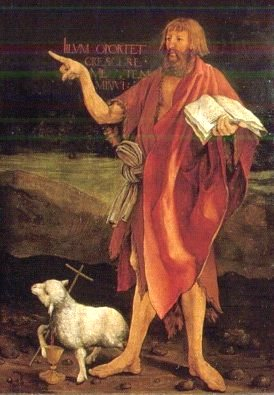
FIGURE III
(Crucifixion d'Issenheim, partie centrale du retable fermé, Unterlinden, Colmar)Comment ne pas lier, ici, l'émeraude et l'agneau pascal à la figure de Jean ? Et, en quelque sorte, que Jean précède Jésus est absolument logique, vu sous l'angle de la vérité hermétique, de celle qui ressortit de la cabale la plus orthodoxe. Cet agneau pascal, Grünewald nous le peint immolé mais encore vivant, vainqueur de la mort et des puissances du mal - relation à Lucifer - à la fois divin par la coupe et juge par la croix. Divin par la coupe qui reçoit le sang, c'est-à-dire l'âme ; notons que cette coupe serait mieux vue comme faite de terre : on comprend mieux alors ce que, sur le plan alchimique, elle représente par rapport au « sang » des métaux morts. Juge par la croix, voilà qui est évident quand on considère le mot « crux » d'où est tiré « crucifixion », c'est-à-dire creuset où l'on forge l'âme de la Pierre [le métal « crud »] ou semence de l'or. De là, une relation au bélier car cet agneau exerce sa colère, fait la guerre et remporte la victoire ultime. La Colère est l'une de ces Vertus que l'on aperçoit sur le portail central de Notre-Dame de Paris : il est notable que ce médaillon n'ait pas fait l'objet de l'un des paragraphes du Mystère des Cathédrales, rédigé par l'Adepte Fulcanelli. Voilà qui est regrettable, car la transition lui eût été toute donnée avec la foudre. Le trident de Neptune pâlit de la comparaison avec le foudre de Zeus : Virgile le décrit comme un dard enflammé lançant douze rayons : trois de grêle [l'EAU en TERRE ou l'AIR en TERRE], trois de pluie [l'AIR en EAU], trois de FEU [AIR et EAU] et trois de vent [AIR animé] : ce vent prend la figure d'Auster [les autres vents cardinaux sont Zephirus, Aquilo et Eurus ; rappelons que Zéphyre vient de l'Ouest, l'Aquilon est septentrional et Eurus souffle du Sud Ouest]. Auster vient du midi et c'est un vent desséchant qui doit souffler lors de l'époque de l'assation, quand on pratique le grand oeuvre par la voie sèche. Il convient alors qu'une gradation soutenue soit imposée au feu, car de l'emportement - colère non contrôlée - pourrait conduire l'Artiste à dire : austrum immixi floribus [déchaîné l'ouragan sur mes fleurs] ce qu'en termes vulgaires on peut traduire par « je me suis perdu moi-même. ».
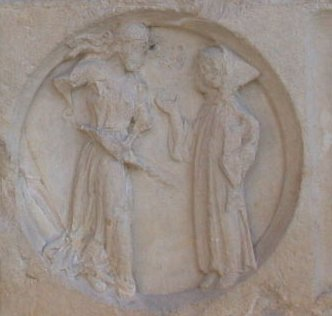
FIGURE IV
(la Colère : l'Artiste a brûlé ses fleurs)C'est ce qu'exprime avec toute la précision voulue le Vice du portail de Notre-Dame. Mais le Sud, le midi, c'est aussi le désert et saint Jean comme saint Paul ou saint antoine est un pérégrin du désert, un pèlerin du sable. Ce dualisme de l'EAU, exprimée par le sang du Christ et de la TERRE, exprimée par ce sable siliceux, ce silice en un mot que l'on prescrit à l'église lors des cérémonies, permet d'expliquer un détail d'allégorie donnée par Nicolas Flamel : « Ayant perçu la senteur forte, j'arrivai à faire l'ouvrage... », que nous pouvons comprendre comme « ayant pris le bon chemin, le bon sentier, je m'engageais dans l'assation et parvenais à faire coaguler l'eau mercurielle. ». C'est par cette austérité [austeroV, liquide sec, rude et âpre dans lequel on doit deviner le vinaigre très aigre d'Artephius] que l'Artiste doit faire l'oeuvre et que le pèlerin doit se rendre à la Compostelle des alchimistes, qui bien sûr, n'a rien à voir avec la cité connue sous le nom de santiago de Compostela : la légende rapporte que les restes de saint Jacques le Majeur auraient été déposés dans un esquif [où l'on peut deviner l'arche de Noë] et que celui-ci aurait échoué en Galice [est-il besoin d'insister ? Revoyez la signification des mots coq, gaulois, galle et kermès], où son tombeau aurait été découvert au IXe siècle. Nous comprenons alors le véritable sens hermétique du mot ermite : pauvre, qui est à sec, vieillard [auoV], tous qualificatifs qui peuvent s'appliquer aisément à la figure de l'ermite du tarot ou encore à celui qu'Offerus vient consulter avant de faire franchir à l'enfant Jésus un fleuve profond où il prend les traits de saint Christophe, ainsi qu'un bas relief de l'hôtel Lallemand, à Bourges, vient le dépeindre. Ce temps de sécheresse, nous en avons parlé suffisamment dans les emblèmes XLIV, XLIII, XLII et XXXIX de l'Atalanta fugiens pour qu'on nous permette de passer outre. La colère de l'agneau nous amène ainsi par logique aux cornes du Bélier Ammon, symbole de puissance ou de Force. La même, là encore, qui est représentée en majesté sur un des médaillons du portail de Notre-Dame, ou encore celle du tarot, ou enfin celle du tombeau des Carmes où gît François II, duc de Bretagne. C'est l'expression d'Arès qui domine, par opposition au placide Ariès ; le Bélier est donc la figure de l'agneau pascal où sont entrelacées les images éidétiques du patient et de l'agent de Fulcanelli [voyez encore la cheminée alchimique du château de Terre-Neuve à Fontenay où s'accuse de façon plus exotérique l'ésotérisme du symbole]. Nous en venons donc tout naturellement à cette image de l'agneau que montre Jean à la figure II : le Baptiste ne fait qu'annoncer, en tenant ce médaillon, que la venue du messie. Dans cette optique, les cornes du bélier Ammon représentent l'emblème de la Magna Mater divine, c'est-à-dire la Vierge. Cette Annonciation, toute virtuelle, trouve sa réplique terrestre dans la visite que vient faire Marie à Elisabeth [extrait de Saint Jean-Baptiste, sa vie, son culte et sa légende artistique, Ernest Razy, Paris, Téqui, 1880 - tous les extraits sur ce fond coloré font partie de cet ouvrage. ]
La divine voyageuse éprouve la plus vive joie à la pensée de revoir Elisabeth, à laquelle l'unit une étroite parenté. Jadis Nathan, de la tribu de Lévi, épousa Marie, de la tribu de Juda; il en eut trois filles : Marie, épouse de Cléophas; Sobé, épouse d'un prêtre qui fut père d'Elisabeth, et Anne, épouse de Joachim, père de la très-sainte Vierge. Elisabeth et Marie, filles des deux soeurs, sont, par conséquent, des cousines germaines. La Vierge immaculée, « toute resplendissante de la lumière qu'elle a conçue, » franchit le seuil de Zacharie et, d'une voix céleste, salue sa parente que le Seigneur a bénie comme elle. Ô prodige ! à ces accents suaves, l'enfant d'Elisabeth tressaille dans le sein de sa mère, comme si, pour aller au devant de son Dieu, il voulait franchir la barrière
qui le retient captif ! Elisabeth est, au même instant, remplie du Saint-Esprit : « Ô Marie, s'écrie-t-elle, vous êtes bénie entre toutes les femmes, et le fruit de vos entrailles est béni. D'où me vient ce bonheur que la mère de mon Sauveur daigne me visiter ? Car, au moment où vos paroles de salutation ont frappé mon oreille, mon enfant a tressailli de joie dans mon sein.» Puis, faisant un retour sur l'incrédulité passée de Zacharie, elle poursuit en disant : «.Bienheureuse, ô vous qui avez cru, parce que les choses qui vous ont été dites de la part du Seigneur s'accompliront. » Ainsi parle Elisabeth, et, se jetant dans les bras que lui ouvre Marie, elle couvre, des plus pieuses et des plus tendres caresses, Celle qui porte le Dieu qui vient sauver l'humanité.Visitation de Marie à Elisabeth Il s'agit de la troisième « Visitation » ou « Annonciation ». Nous entendons par là des échanges entre le CIEL et la TERRE ; en effet, l'ange Gabriel intervient deux fois [annonciations proprement dites] tandis qu'ici il s'agit d'une Visitation où l'Esprit est pour ainsi dire enceint dans le Corps [couplage spirituel entre le christ et saint Jean avant leur naissance]. C'est là, croyons-nous possible de le supputer, le sens exotérique développé à l'extrême, de ce qu'offre à voir la belle sculpture de la figure II. Naturellement, il ne s'agit de notre part que d'une simple conjecture. Nous terminerons sur ce beau sujet en ajoutant - cf. retable d'Issenheim, note 9 - qu'auparavant, la figure christique était suggérée par la peinture du Soleil et de la Lune, disposés de part et d'autre de l'agneau [le Christ] où l'on peut voir les restes d'un mythe du Bélier céleste portant entre ses cornes une calebasse qui n'est autre que la matrice solaire. Ses cornes sont des génitoires qui servent à maintenir cette calebasse, fécondée par un phallus dressé sur son front, tandis qu'il urine les pluies et les brouillards qui descendent féconder la terre [modifié de Marcel Griaule, Symbolisme d'un temple totémique soudanais, Rome, 1957]. Nous ne pouvons transposer ce mythe dogon au christianisme mais ce qui est possible, en revanche, par la médiation de l'hermétisme, est d'établir des analogies entre les croyances et les icônes : on est alors forcé de voir dans les deux cornes du Bélier les luminaires primitifs ; dans la matrice solaire, notre Compost où mûrit le Rebis ; dans le phallus la flèche du Sagittaire prête à être lancée [l'incarnation de l'Âme], avec une relation immédiate avec Pallas - Athéna sortant toute armée du cerveau de Zeus [le symbolisme est rigoureusement le même] ; dans l'urine, la rosée de mai [nous avons comparé cette rosée à l'urine des anges, cf. Atalanta fugiens et bas-relief de l'hôtel Lallemand à Bourges]. Sur la calebasse, nous serons plus disert : il n'a pas échappé aux étudiants de l'Art que Fulcanelli a écrit dans le tome I des Demeures Philosophales :
« Enfin, le mercure, appelé le fou du Grand Oeuvre, à cause de son inconstance et de sa volatilité, voit sa signification confirmée dans la première lame de tarot, intitulée le Fou ou l'Alchimiste. »
Ce fou comme on peut l'apercevoir est aussi un voyageur : comme il fallait s'y attendre, c'est la tête [i.e. calebasse ou encore caboche] qui est son point faible ; il est en outre muni du bâton de pèlerin ce qui signe littéralement sa nature. De ce voyageur, Fulcanelli nous assure :
« ...qu'il est joyeux et satisfait d'avoir accompli son voeu. Car la besace est vide, le bourdon sans calebasse indiquent...[qu'il] n'a plus besoin...du boire ni du manger. »
C'est dire par là (calebasse est mis pour cucurbite et caboche pour la taille) que le travail est accompli et que la pierre a signé de l'étoile sa naissance. Le bourdon apparaît ainsi comme le dispositif qui supporte la calebasse, c'est-à-dire comme les cornes lunaires, image des luminaires, auxquelles s'ajoute le phallus [la tige du bourdon, ou celle, si l'on préfère, du caducée d'Hermès]. On comprend dès lors l'analogie entre les génitoires et les luminaires puisque la Pierre est enfantée du Soleil et de la Lune [cf. Table d'Emeraude]. Les pluies et le brouillards sont à l'égal de la « graisse de rosée » ou du vent mercuriel tels qu'en parlent Alexandre Sethon dans sa Nouvelle Lumière Chymique ou Fulcanelli au Mystère des Cathédrales. De la même façon pouvons nous, non moins, comprendre que les principaux protagonistes de l'oeuvre, le Soleil et la Lune, peuvent être idéalisés dans la figure de Zacharie - père de saint Jean - et de Marie. C'est-à-dire de ceux à qui Gabriel vint annoncer les temps futurs et les félicités. Voyons cela.
[...] C'est, précisément, à ce moment solennel entre tous, que s'ouvre le récit des événements considérables que nous nous proposons de retracer. Les cérémonies de la journée sont accomplies. Le sacrifice du soir touche lui-même à sa fin. Un Pontife, dont le visage respire la noblesse et la douceur, et que rend plus vénérable encore la longue barbe blanche qui tombe jusqu'à sa ceinture, se dirige, à pas lents, vers le voile, religieusement baissé, qui le sépare encore du Saint des Saints. Ses mains débiles soutiennent avec peine le pesant encensoir dont l'odorante fumée l'environne comme d'un nuage protecteur ; elles s'agitent, tremblantes, sous l'empire d'une respectueuse et profonde émotion plus encore que sous le poids des années. Ce n'est point Mathias, le Grand-Prêtre actuel des Juifs ; sans doute une maladie, quelque souillure légale, — comme l'histoire en offre des exemples, — on plutôt les adorables desseins de la Providence le tiennent éloigné du Saint des Saints dont lui seul a le droit de franchir aujourd'hui le seuil ; c'est un prêtre de la famille d'Abia, c'est l'époux de la vertueuse
Elisabeth, issue du sang d'Aaron, et demeurée jusqu'alors stérile, c'est l'auguste Zacharie qui le remplace. Le costume du saint vieillard est d'une incomparable beauté. Son front, ceint d'une tiare, porte ces mots gravés sur une lame d'or : « La Sainteté est à celui qui est. » Une ample robe de couleur hyacinthe descend presque jusqu'à ses pieds et
laisse apercevoir la longue tunique de lin sur laquelle elle flotte. Au bas de la première de ces deux robes brillent attachées, au nombre de soixante-douze, de grandes et de petites sonnettes d'or entremêlées. L'Éphod, le plus noble insigne des pontifes, passé par dessus la robe d'hyacinthe, le revêt jusqu'à mi-corps. C'est une courte tunique d'une étoffe richement brodée, comme la ceinture sacerdotale qui s'enroule autour de ses reins. Elle n'a d'autre ouverture que celle du haut et se referme sur les épaules ; toutes deux sont ornées d'une pierre précieuse d'une étonnante grosseur. Ces pierres portent gravés les noms des douze tribus : six sur l'une, six sur l'autre. Une place d'un pied carré est ménagée sur la devant de l'Éphod, pour recevoir le pectoral retenu par quatre chaînes d'or, et enrichi lui-même de douze pierres précieuses ; sur chacune d'elles est écrit le nom d'une des douze tribus. Enfin, sur une autre lame d'or, se lisent deux mots hébreux : Urim et Thummim, qui signifient : Science et Pureté. Le Grand-Prêtre n'apparaît que rarement dans cet antique costume. Hérode le Grand, voulant s'arroger un droit exclusif sur le sacerdoce suprême dont il a dépouillé la famille des Asmonéens, a fait placer l'Éphod dans une tour. Il y demeure confié à une garde vigilante, et, depuis la domination romaine, on ne le met qu'à certains jours déterminés à la disposition des Pontifes, afin d'en ruiner ainsi le prestige. Conduite barbare, dictée par une perfide politique, car les Israélites ne peuvent contempler, sans frémir d'indignation et de joie, de regret et d'espérance, la pompe inusitée dans laquelle se montre Zacharie en ces trop courts instants où revit pour eux, avec tant de force, le souvenir, déjà lointain, des jours heureux.
Zacharie vient de pénétrer dans le Saint des Saints. Le peuple tout entier se prosterne, en priant, sur le sacré parvis, attendant, avec une sorte d'anxiété, le retour du bien-aimé Pontife qui, selon l'usage, va s'avancer pour le bénir. Pendant ce temps, Zacharie, élevant son cœur et ses yeux vers le ciel, laisse échapper de ses lèvres suppliantes une prière plus ardente que le feu des holocaustes : «Dieu Tout-Puissant, s'écrie-t-il, que votre nom soit à jamais glorifié et sanctifié dans le monde dont vous êtes le Créateur; faites, régner votre règne; que la Rédemption fleurisse et que le Messie vienne promptement ! » A peine a-t-il achevé ces paroles, qu'un ange apparaît tout à coup à la droite de l'autel des parfums. Ses vêtements projettent une lumière surnaturelle ; son visage a de célestes rayonnements ; tout son aspect, enfln, indique un messager du Très-Haut.Vision de Zacharie I Zacharie ! Ce n'est pas un hasard si l'un des plus grands alchimistes, Denis Zachaire, a pris ce pseudonyme pour lui servir de bristol altier... En grec, zakoroV représente un prêtre d'où dérive ZacariaV, nom du père de saint Jean-Baptiste. Ce n'est pas tout. Si l'on y applique la cabale hermétique, on peut décomposer ZacariaV en za [très, fort] et car(i)a [ce qui réjouit le coeur] ; autrement dit, Zacharie est celui par lequel le coeur est fortement réjoui. Ce qu'en termes alchimiques, on peut traduire par : « ce qui est le mieux pour l'or philosophique ». Si l'on reprend toutes nos études de symbolisme ainsi que nos notes concernant la fusion des métaux et la production des pierres gemmes, il n'est pas difficile de comprendre - en admettant que l'or philosophique est une trace de chaux métallique, c'est-à-dire d'oxyde - que ce qui est le « meilleur » pour l'or, c'est de lui trouver un réceptacle ad hoc, une « toyson » ou de lui procurer un écrin pour qu'il demeure à jamais inaltéré. Il s'agit donc de trouver les substances qui vont former un beau terreau pour notre Pierre, un nid douiller de plumes [les colombes de Diane du Philalèthe]. On pourrait croire totalement gratuite cette supputation. Ce n'est pas sûr. Car Zacharie porte l'Ephod, sorte de manteau cosmique où s'alignent les pierres précieuses. Le terme Ephod n'a pas d'équivalent latin ou grec : c'est donc avec réserve que nous proposerons la construction suivante, qui est de considérer la simple similitude phonétique entre Ephod et ejodoV, qui a valeur de « voies et moyens par lesquels le corps accomplit d'instinct ses fonctions » ou « direction instinctive de l'esprit ».
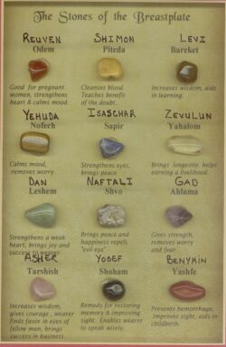
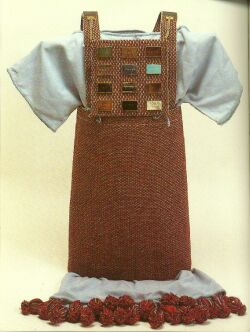
FIGURE V
(les douze pierres de l'Ephod - l'Ephod)Voici à présent les douze pierres correspondants aux douze tribus :
Sardoine. ......... Ruben
Topaze. ............ Siméon
Emeraude........... Lévi
Escarboucle .......... Juda
Saphir. ............ Dan
Jaspe .......... Nephtali
Ligure. .......... Gad
Agathe. .......... Aser
Améthyste ......... Issachar
Chrysolithe ......... Zabulon
Onyx ........... Joseph
Béryl......... Benjamin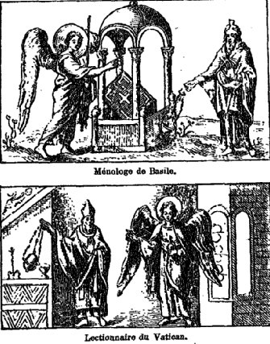
FIGURE VI
(vie de saint Jean-Baptiste : Vison de Zacharie)De ce que nous venons de voir, on peut faire ressortir que l'Ephod n'est autre qu'une variété de christophore puisque, à proprement parler, la tunique sacrée « porte le Soufre ». Il est écrit dans l'Exode, 28 :
Voici les vêtements qu'ils auront à confectionner : un pectoral, un éphod, un manteau, une tunique brodée, un turban et une ceinture.Pourpre, couleur violet, or, fil de lin, nous voyons défiler plusieurs « matières » que préconisent d'utiliser les alchimistes dans leurs traités les plus spéculatifs, notamment Basile Valentin et Bernard Le Trévisan [cf. notamment la Révélation et Déclaration sur les teintures des Sept Métaux et le Traité des Choses Naturelles et Supernaturelles]. On trouvera dans notre commentaire sur la Révélation... les correspondances entre certaines pierres précieuses, les planètes et les signes du zodiaque. Il ne sera peut-être pas indifférent de remarquer, en particulier, que le rubis [l'escarboucle en principe] est de la famille de Juda et rattaché au Bélier, ou que le saphir, de la famille de Dan, est rattaché au Cancer. Un autre système de correspondances a été proposé, qui diffère sensiblement de celui qui est proposé par Ernest Razy. Le voici :
Tels sont les vêtements qu'ils feront pour ton frère Aaron et pour ses fils, afin qu'ils soient prêtres à mon service ; ils emploieront de l'or, de la pourpre violette et écarlate, du cramoisi et du lin fin.
L'éphod sera fait d'or, de pourpre violette et écarlate, de cramoisi et de lin fin retors, artistement tissés. A ses deux extrémités, il y aura deux épaulières, qui le retiendront. La ceinture destinée à l'assujettir sera du même travail et fera corps avec lui : or, pourpre violette et écarlate, cramoisi et lin fin retors. Tu prendras deux pierres d'onyx pour y graver les noms des fils d'Israël : six noms sur une pierre, six sur l'autre, par ordre de naissance. Tu graveras ces noms des enfants d'Israël sur les deux pierres, comme un lapidaire graverait un cachet ; et les deux pierres seront enchâssées dans des montures d'or.
Tu placeras ces deux pierres sur les épaulières de l'éphod, en souvenir des fils d'Israël, dont Aaron portera les noms sur les deux épaules, devant le Seigneur, pour en rappeler le souvenir.
Tu feras des chatons d'or et deux chaînettes d'or pur tressées en forme de cordons, que tu fixeras aux chatons. Tu feras un pectoral du jugement, artistement travaillé, du même tissu que l'éphod : or, pourpre violette et écarlate, cramoisi et lin fin retors. Il sera carré, replié en deux, long d'un empan et large d'un empan. Tu le garniras de quatre rangs de pierreries ; premier rang : unesardoine, une topaze, une émeraude ; second rang : un rubis, un saphir, un diamant ; troisième rang : une opale, une agate, une améthyste ; quatrième rang : une chrysolithe, un onyx et un jaspe. Elles seront enchâssées dans une monture d'or. Comme les noms des fils d'Israël, elles seront au nombre de douze, et le nom d'une des douze tribus sera gravé sur chacune d'elles comme sur un cachet. Tu feras aussi pour le pectoral des chaînettes d'or pur, tressées en forme de cordons. Tu feras encore pour le pectoral deux anneaux d'or, que tu fixeras à ses extrémités. Tu passeras les deux cordons d'or dans les deux anneaux ; tu attacheras les deux bouts des deux cordons aux deux agrafes, et tu tes mettras par-devant sur les deux épaulettes de l'éphod. Tu feras encore deux anneaux d'or que tu fixeras aux deux extrémités du pectoral sur le bord intérieur qui s'applique contre l'éphod. Et enfin deux autres anneaux d'or que tu fixeras par devant au bas des deux épaulettes de l'éphod, à l'endroit de la jonction, sur la ceinture de l'éphod. On attachera les anneaux du pectoral à ceux de l'éphod au moyen d'un ruban de pourpre violette, afin de fixer le pectoral sur la ceinture de l'éphod en sorte qu'il ne puisse s'en écarter. [...]
jaspe Benjamin Bélier saphir Issachar Taureau agate Neftali Gémeaux émeraude Levi Cancer onyx Zabulon Lion cornaline Ruben Vierge chrysolithe Asher Balance béryl Joseph Scorpion topaze Siméon Sagittaire rubis Juda Capricorne zircon Dan Verseau améthyste Gad Poissons correspondances d'après Rationnel du Jugement Quoi qu'il en soit de ces attributions, qui peuvent rendre perplexe ou dubitatif à bon droit, nous retiendrons que Zacharie, père de Jean, porte indubitablement les attributs de notre « toyson d'or », à l'origine même du support de l'or alchimique, c'est-à-dire du Soufre quintessencé. Le violet est la couleur du ciel tel qu'il apparaît au sommet des montagnes, là où les principes de l'oeuvre se trouvent conjoints ; le pourpre est la couleur que prend le Compost au régime de Mars, précédant de peu celui du soleil qui clôt la Grande Coction. Voyons à présent le tableau des correspondances avec le synode apostolique.
correspondances par rapport au Synode Apostolique Intéressons nous uniquement à la ligne 5. La pierre rapportée à Jean est l'escarboucle. Il n'aura pas échappé aux lecteurs que des douze pierres mentionnées dans le tableau ci-dessus, l'escarboucle, la topaze et le rubis [non présent sur ce tableau et qu'il faut mettre en lieu et place du béryl] sont fréquemment citées dans nos pages, sur la base de la lecture des textes alchimiques et de la lecture des procédés de synthèse artificielle des pierres gemmes. Ces trois pierres symbolisent aussi l'amour céleste du bien, à rapprocher de la maxime « science et pureté » [Urim et Thummim] que ne renieraient pas nombre d'alchimistes à commencer par Fulcanelli. Ces trois pierres sont en outre en liaison avec le Lion [escarboucle], le Capricorne [rubis] et le Verseau [topaze]. Il est assez difficile de savoir quelle est la pierre que les Anciens voulaient désigner par « escarboucle », c'est-à-dire carbunculus ; il semble en tous cas qu'il ne s'agissait pas du rubis mais peut-être du cristal de roche très pur. Ces trois signes désignent une pointe du triangle de FEU [Lion], de TERRE [Capricorne] et d'EAU [Verseau] dans notre version réformée du quaternaire zodiacal. La logique veut que de ces trois signes, ce soit le Lion qui désigne l'opération - celle du Lion Vert, « verd » ou jeune lion - qui préside à la dissolution des matières ou, si l'on préfère, à la putréfaction, encore voilée par l'allégorie de la tête de corbeau ou du Caput mortuum. Elle devrait suivre immédiatement la période de mise en cendres, symbolisée par le Capricorne. Voyez là-dessus notre zodiaque alchimique.
En résumé, Zacharie apparaît comme l'une de nos deux minières, de celles dont dépend la dissolution du soufre puis la croissance du Rebis. Il en découle que Zacharie se situe du côté de la série mercurielle [cf. Monade Hiéroglyphique de John Dee sur les séries soufrées et mercurielles ; cf. aussi le Mercure de nature]. C'est l'équivalent du Mercurius senex de Jung. Héraut de l'oeuvre, Zacharie reçoit l'esprit - la Force - de Dieu du souffle de l'ange Gabriel. Reprenons la relation de la Vision de Zacharie.
À sa vue, le saint prêtre demeure glacé d'effroi ; mais l'ange le rassure bientôt en disant : « Ne craignez point, Zacharie, parce que votre prière a été exaucée; et Elisabeth, votre femme, vous enfantera un fils, auquel vous donnerez le nom de Jean. Vous en serez dans la joie et le ravissement, et beaucoup de personnes se réjouiront de sa naissance, car il sera grand devant le Seigneur; il ne boira pas de vin ni rien de ce qui peut enivrer, et il sera rempli du Saint-Esprit dès le sein de sa mère. Il convertira plusieurs des enfants d'Israël au Seigneur leur Dieu, et il marchera devant lui dans l'esprit et la vertu d'Elie, pour unir les cœurs des pères à ceux des fils, rappeler les désobéissants à la prudence des justes, et préparer au Seigneur un peuple parfait. » L'ange dit, et des torrents de joie inondent le cœur du vénérable Pontife. Point de doute : la prière que l'envoyé du Seigneur lui annonce devoir être exaucée est celle-là même qu'il vient, à l'instant, de faire monter, sur les ailes de la foi, jusqu'au pied du trône de Jéhovah. C'est pour le salut du peuple, c'est pour la rédemption d'Israël, et non pour lui, qu'il a prié, et voici que, dans sa miséricorde, le Tout-Puissant le rend l'objet d'une double grâce : II daigne le choisir pour l'instrument des premiers effets de son amour infini pour les hommes ; il lui accorde, en même temps, ainsi qu'à son épouse Elisabeth, une faveur inespérée par eux aujourd'hui, mais ardemment sollicitée jadis dans les supplications et les larmes de leur jeunesse. C'est ainsi qu'une vieillesse stérile, bravant l'injure des ans et devenant tout à coup féconde, produira bientôt un rejeton béni auquel le ciel lui-même assigne un nom et prédit d'incomparables destins. Pourquoi faut-il, hélas ! que les âmes les plus belles payent aussi, parfois, à la faiblesse humaine un tribut passager ? Un doute a traversé l'esprit de Zacharie, non point sur la venue prochaine du Messie, objet principal de l'annonce du divin messager, mais sur la faveur personnelle qui vient de lui être promise. S'adressant donc, plein de trouble encore, à l'ange qui se tient à ses côtés : « A quoi connaîtrai-je, lui répond-il, la vérité de ce que vous me dites, car je suis vieux, et ma femme est déjà avancée en âge ? » Imprudente question, indice d'une foi un instant chancelante ! L'ange y fait cette réponse à la fois consolante et sévère : « Je suis Gabriel, qui me tiens devant Dieu, et j'ai reçu mission de venir vous parler pour vous annoncer cette heureuse nouvelle, et voici que vous serez sourd et vous ne pourrez parler jusqu'au jour où ceci arrivera, parce que vous n'avez pas cru en mes paroles qui s'accompliront en leur temps. » L'ange disparaît à ces mots. La parole expire sur les lèvres du Pontife ; c'est le châtiment de son doute, mais, en même temps, la confirmation mystérieuse, demandée par lui, de la promesse d'un fils qui lui est faite en ce moment. Neuf mois durant, ses oreilles et sa bouche vont demeurer scellées ; mais son cœur reste ouvert à la reconnaissance, car ses premiers accents, lorsqu'il recouvrera la parole, seront un cantique d'actions de grâces pour célébrer la venue prochaine du Messie et la grandeur future de son enfant..... Vision de Zacharie II On voit bien le rôle joué par l'ange Gabriel. En reprenant une note d'E. Canseliet [Deux Logis Alchimiques], on pourrait presque dire qu'il est à l'image de l'épée qui opère l'ouverture des métaux, leur transformation en eau minérale animée, et qui permet enfin de féconder la terre restée stérile jusqu'alors. Il s'apparente, dans le même temps, à la flèche du Sagittaire où gît, terrée, l'émeraude des Sages. Examinons le nom de Gabriel : ce nom, bien connu du peuple Juif, ne pouvait manquer de rassurer Zacharie. Jadis Daniel avait désigné Gabriel, dont le nom signifie force de Dieu, comme le protecteur des enfants d'Israël. — Dieu choisit le même ange pour annoncer la naissance du Précurseur et celle du Sauveur du monde. Aussi n'est-ce pas sans raison que nous avons proposé de voir dans Gabriel l'instrument d'ouverture du métal ou du minéral. On pourrait même aller plus loin dans l'allégorie en posant que le couple Gabriel - Zacharie [la suite le montrera] peut être considéré comme l'une des colombes de Diane [autrement dit l'une des cornes du croissant lunaire comme nous l'avons vu supra]. Cette parole qui manque à Zacharie, en réparation de son doute qui constitue une offense à la Force de Dieu, c'est à très peu près la même chose qui survient à Moïse lorsque la parole vient à lui manquer et qu'il ne peut répondre à Aaron. Que le lecteur écoute Moïse und Aaron, cet opéra de Schönberg qui est en fait bien plus et qui, selon l'expression de Theodor Adorno, est une sorte de fragment sacré [Quasi una fantasia, Gallimard, coll. Idées]. Cette parole qui manque, c'est aussi Papageno dans la Flûte Enchantée, opéra initiatique s'il en est : on est renvoyé évidemment vers le Livre Muet des alchimistes, leur Mutus Liber qui parle en images allégorisées. La sentence des alchimistes, qu'énonce Fulcanelli en fin de son Mystère des Cathédrales, est ainsi appliqué - sur Zacharie - à la lettre par l'ange Gabriel. Le silence étreint Zacharie à l'image de l'ombre de la nuit qui arrive sur le monde, aurore de l'oeuvre annoncée par Vesper, Vénus au couchant.
2. La Visitation de Marie à Elisabeth
Elisabeth est une femme déjà âgée à qui le premier miracle va arriver : enfanter, alors que la logique voulût qu'elle resta stérile.
« Nous savons par l'Evangile qu'à partir de ce moment elle se tint cachée pendant l'espace de cinq
mois, parce que c'est là, disait-elle, ce que le Seigneur avait en moi, pour me tirer de l'opprobre
où j'étais devant les hommes. » [Saint Jean Baptiste...]Cinq mois est la durée que préconisent les alchimistes pour recuire leur matière afin de la rétrograder [Filet d'Ariadne, Batsdorff], de la réincruder en sorte d'en faire un nouveau corps, dépuré et cristallin, sans mesure avec leur première matière amorphe et chaotique ; voilà ce que l'on peut - en deuxième lecture évidemment - tirer de cette étrange relation à l'opprobre dont se croit atteinte Elisabeth. Il s'agit là d'un mûrissement qui correspond à une phase de la grossesse où le foetus, par nos techniques actuelles, est presque viable. Dans ses Figures Hiéroglyphiques, Flamel prescrit la même durée pour sortir de la noirceur, pour que s'accomplisse la naissance du Rebis, qui n'est encore qu'à l'état de foetus. Ce n'est pas autre chose qu'affirme Ripley :
« Et quand ton vaisseau aura demeuré cinq mois, tellement qu'après les éclipses la lumière apparaisse, alors tu augmenteras aussitôt la chaleur et la continueras jusqu'à ce que la Pierre reluise de couleur translucide : et alors tu pourras ouvrir ton vaisseau et nourrir l'enfant [...] » [Douze Portes]
Ouvrir le vaisseau et nourrir l'enfant, voilà qui correspond à l'ouverture de la terre feuillée et au régime de la blancheur, qui apparaît dès la Balance et s'épanouit dans la Vierge, mais passons... Selon le conseil de Trévisan, c'est cent trente jours qu'il faut respecter avant d'accéder à la Pierre de premier ordre. L'image est encore plus suggestive selon ce qu'en rapporte Samuel Northon :
« Il faut que notre Terre virginale / Soit nourrie du Lait de la Nature, / Au début avec parcimonie
et beaucoup de douceur, / Tout comme on fait un enfant / Il en naît un Corbeau / Elu comme la queue de paon; / Dans cinq mois apparaîtront des Lis / Quand tu lui ouvriras la porte.» [l'Enfant Hermaphrodite du Soleil et de la Lune]Mais on aurait néanmoins tort e voir dans l'enfant d'Elisabeth notre Rebis ; il ne s'agit, rappelons-le, que de la partie mercurielle.
Elisabeth était dans son sixième mois, lorsque l'ange Gabriel fut envoyé de Dieu, en une ville de Galilée, appelée Nasareth, à une vierge fiancée à un homme de la maison de David, appelé Joseph, et cette Vierge se nommait Marie. L'ange, étant entré où elle était, lui dit : « Je vous salue, Marie, pleine de grâce, le Seigneur est avec vous; vous êtes bénie entre toutes les femmes. » Mais elle, l'ayant entendu, fut troublée de ses paroles, et elle pensait en elle-même quelle pouvait être cette salutation. L'ange lui dit: « Ne craignez point, Marie, car vous avez trouvé grâce devant Dieu. Vous concevrez dans votre sein et vous enfanterez un Fils auquel vous donnerea le nom de Jésus. Il sera grand, et on rappellera le Fils du Très-Haut; le Seigneur Dieu lui donnera le trône de David, son père; il régnera éternellement sur la maison de Jacob, et son royaume n'aura point de fin. » Alors Marie dit à l'Ange : « Comment cela se fera-t-il ? car je ne connais point d'homme. » L'ange lui répondit : « Le Saint-Esprit surviendra en vous, et la vertu du Très-Haut vous couvrira de son ombre; c'est pourquoi le fruit saint qui naîtra de vous sera appelé le Fils de Dieu. Aussi, je vous annonce qu'Elisabeth, votre cousine, a conçu un fils dans sa vieillesse, et c'est ici le sixième mois de celle qui est appelée stérile, parce qu'il n'y a rien d'impossible à Dieu. »
Alors Marie lui dit : « Voici la servante du Seigneur; qu'il me soit fait selon votre parole. »Visitation I - Elisabeth Voilà la transition entre le Mercure et le Soufre ; le moment où la lumière succède aux ténèbres. Il s'agit du sixième mois de l'oeuvre, quand les couleurs de la queue de paon apparaissent ainsi qu'il est vu dans le Mutus Liber. Ici, c'est D'Espagnet qu'il faut citer :
« Et le troisième jour, c'est-à-dire le troisième millénaire (car mille années devant Dieu ne comptent que pour un jour) après la naissance et le premier avènement de ce Soleil non créé, et sur la fin du sixième jour, c'est-à-dire du sixième millénaire depuis la création, se fera la glorieuse résurrection de la nature humaine dans le second avènement du Juge suprême [...] » [Philosophie Naturelle Restituée, cap. XXXVIII]
Sur cette base de 1 jour = 1 millénaire, on a tôt fait de montrer que le sixième mois dont parle l'ange Gabriel est le moment crucial où le couplage Jean - Jésus va se faire [entendez le couplage Mercure - Soufre]. Nous avons déjà parlé de cet objet hermétique composite dont une partie est manifestement d'essence terrestre, chthonienne, et l'autre, de vertu céleste, gouvernée par les astres, les planètes, et médiée par les signes zodiacaux des époques propices [cf. Fontenay].
« Bientôt ce divin fils, quoiqu'invisible encore, inspire à sa sainte Mère d'aller visiter Elisabeth, Elisabeth qui, presqu'au déclin de l'âge, va donner le jour à un enfant chéri de Dieu. Marie suit l'inspiration de son Fils, tant est grande sa foi. Elle vient où l'ordre secret lui commande de venir. » [Saint Jean Baptiste...]
C'est cette Visitation, cette approche de l'élément spirituel par l'élément terrestre, qui va déterminer la liaison entre le Soufre et le Mercure.
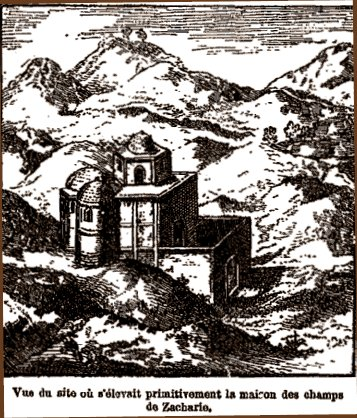
FIGURE VII
(Visitation de Marie à Elisabeth)Dépassant les limites de la Galilée, Marie s'enfonce dans les montagnes de Judée. Le paysage devient extraordinaire, avec des montagnes plus larges au sommet qu'à la base, comme si les éléments s'inversaient par extraordinaire et que la TERRE empiétait sur l'AIR. Il y avait aussi de grandes cavernes dans lesquelles on pouvait voir des pierres singulières. On remarquait aussi une plante qui avait des petites feuilles vertes, des grappes de fleurs et formée de neuf clochettes roses fermées. Ces détails sont en faveur d'une mutation des éléments et d'une genèse minérale ; la fleur dont il est question semble être une petite grappe de Cypre. On peut y deviner une méditation d'après le Cantique des Cantiques, où il est écrit :
«Mon bien-aimé [Jésus] est pour moi une grappe de Cypre [...] mon bien-aimé a donné pour moi la grappe sanglante de la réconciliation.»
annonce symbolique que le Verbe se fait Chair, signe de l'incarnation de l'Âme qui, en alchimie, désigne la réincrudation du Soufre et son accrétion au Sel. Nous ne relèverons pas, compte tenu du hasard phonétique, l'éventuelle liaison qu'il y aurait à établir entre « Cypre » et « Chypre » qui serait une indication sur le cuivre, non pas le métal tel qu'on le connaît maintenant, mais tel que le connaissait les Romains, qui le confondaient souvent avec le bronze ou le laiton. Comme le disait Fulcanelli, peu de paroles suffisent au Sage. Après que Marie et Joseph furent arrivés à la maison de Zacharie et Elisabeth, ils y restèrent 8 jours ; la légende nous dépeint ainsi leurs relations :
« Marie et Elisabeth sont assises dans le jardin, sur un tapis, sous un grand arbre, derrière lequel est une fontaine d'où l'eau sort quand on retire une bonde. Je vois tout autour du gazon et des fleurs, et des arbres avec de petites prunes jaunes. »
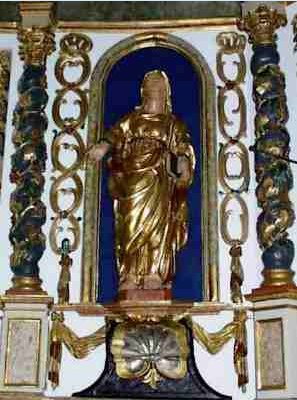
Elisabeth, retable baroque s'Estirac (Hautes Pyrénées, Castelneau), détail, XVIIIeCombien serait-il tentant de voir dans cet arbre un vieux chêne creux, que cette fontaine sourde des racines de l'arbre et que les fleurs forment un beau rosier fleuri ! On se retrouverait devant une scène bien connue des Figures Hiéroglyphiques de Flamel... Il nous suffirait d'ajouter à cette scène les deux principes de la Pierre dont le Soleil et la Lune sont les parents. A défaut de pouvoir les trouver dans les figures de Marie et d'Elisabeth, du moins les textes nous assurent-ils que :
« La Vierge immaculée franchit le seuil de Zacharie et, d'une voix céleste, salue sa parente que le Seigneur a bénie comme elle. Ô prodige ! A ces accents suaves, l'enfant d'Elisabeth tressaille dans le sein de sa mère, comme si, pour aller au devant de son Dieu, il voulait franchir la barrière qui le retient captif ! » [Vie de Saint Jean...]
C'est le fameux couplage dont nous parlions tout à l'heure. Ce tressaillement mystérieux, c'est en somme un baptême anticipé où le Soufre est oint par le Mercure : il le purifie ainsi de ses scories résiduelles et annonce l'avenir avant d'avoir vu le présent. Les textes alchimiques sont en accord avec ces réflexions. Examinons à nouveau la Nouvelle Lumière Chymique de Sethon :
« [...] Le Mercure.
Mais moi je suis la voie, le précurseur, le pèlerin, le domestique, le fidèle à mes compagnons, qui ne laisse point ceux qui m'accompagnent, mais je demeure avec eux, et péris avec eux. Je suis un corps immortel, et si je meurs quand on le tue, mais je ressuscite au jugement par-devant un Juge sage et discret.
L'Alchymiste .
Tu es donc la Pierre des Philosophes ?
Le Mercure .
Ma mère est telle, D'icelle naît artificiellement un je ne sais quoi : mon frère, qui habite dans la forteresse, a en son vouloir tout ce que veut le Philosophe. [...] » [Dialogue du Mercure, de l'Alchimiste et de la Nature]Les alchimistes ont toujours énoncé que l'Artiste devait suivre en tous points la Nature. Dès lors, si nous envisageons notre Cadmus comme un démiurge, c'est quand il lui plaira qu'il pourra amalgamer ses éléments minéral et métallique qui suivront le cours naturel des évolutions de la matière, et à ce titre, l'avenir peut déjà dépasser le présent sans que la logique soit transgressée. C'est une grande vérité hermétique, souvent perdue de vue par les impétrants qui s'imaginent que l'étoile des Mages est présente dans leur régule d'antimoine, mais c'est mestimer la cabale des vieux alchimistes qui, en clairvoyants, savent que leurs textes, tissés d'or et de pierreries, se défendent eux-mêmes de l'intrusion des mercantis pour ne libérer leur entrelacs qu'aux Vrais Disciples d'Hermès [cf. Lettre... de Limojon de saint Didier].
Ce qu'il faut bien comprendre, c'est que Jean précède le Christ : il est rempli du Saint Esprit dès le sein maternel parce qu'il est destiné, selon les paroles de Gabriel, à précéder le Christ dans l'esprit et la vertu d'Elie. Ce n'est pas autrement que les matières doivent être apprêtées par notre Artiste : le Mercure, toujours, précède le Soufre et l'on ne saurait faire le magistère en utilisant le Soufre ou en l'introduisant dans l'athanor [le temple monolithe de Zosime] avant le Mercure, ce qui ferait perdre l'oeuvre. Autrement dit, la mission de Jean sera de préparer le CORPS à recevoir l'ÂME par le biais de l'ESPRIT. La cabale alchimique permet, ainsi, d'expliquer en quoi la mission de Jean va consister non seulement à rendre témoignage à la lumière, mais encore à ramener les incrédules à la prudence des justes. C'est dire que la désobéissance, qui est l'état naturel du premier Mercure [dont les épithètes sont Ajax, Achille, cf. Fontenay] doit être vaincue par l'Artiste. Ce caractère traître du Mercure est à lier à sa ponticité dont il reste toujours quelque chose, en dépit des soins que prodigue l'alchimiste à capturer puis à élever les colombes de Diane ; la preuve en est qu'Apollon - le Soufre roi - est souvent qualifié de perfide ou de traître ; c'est d'ailleurs un trait transmissible à la race humaine, puisque la vue de joyaux, de diamants, de pierres précieuses, peut faire tourner la tête même à l'homme le plus honnête... A ce sujet, il faut ajouter que l'Ancien Testament dicte une Loi de Crainte qui n'est pas sans rappeler la première partie de la Grande Coction du magistère [dragon, putréfaction] alors que le Nouveau Testament dicte la Loi d'Amour [où l'on peut discerner les traits de l'union, de la sublimation] qui caractérise la deuxième partie de la Grande coction, correspondant à l'état du Mercure envisagé comme eau permanente minérale et étoilée.Lorsque Elisabeth prédit à Marie que dans son ventre, elle a senti tressaillir Jean, celle-ci laisse échapper de ses lèvres ce cantique de louanges, d'allégresse et de triomphe, qu'on nomme la Magnificat : c'est le Verbe de Dieu qui est l'auteur du cantique et c'est l'unique fois dans l'histoire de l'Humanité où deux foetus parviennent à s'exprimer par la bouche de leurs mères : c'est la manifestation, l'incarnation - quoique ce mot soit impropre - du couplage entre le médiateur, le héraut, et l'incarnation de Dieu.
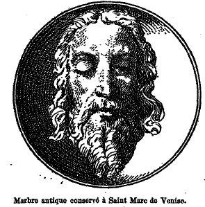
Saint Jean BaptisteIl paraît que Marie prit, la première, entre ses bras l'auguste nouveau-né, ainsi rapproché de son divin maître. Quand le huitième jour arriva :
Le huitième jour arrive. « Les proches et les amis, de saint Paulin [...] s'assemblent, suivant la coutume, pour donner à l'enfant un nom qui tienne, à la fois, du nom des ancêtres et des merveilleuses circonstances de son apparition à la vie. Mais Elisabeth affirme que les parents n'ont pas la liberté du choix. On consulte le père dont la parole, depuis longtemps enchaînée, se refuse à tout langage. S'il ne peut papler, du moins il indiquera ce qu'il pense en écrivant. On l'interroge. Il demande des tablettes. Il écrit: « Jean »... Nativité Jean I Jean, soit : IwannhV ou IwanhV. Il nous faut faire un détour par la cabale pour montrer l'exotérisme qui entoure ce prénom. IwanhV peut en effet se décomposer en iw et anhV. Iw, c'est le nom de la fille d'Inakhos, changée en vache, que garde le farouche Argus aux cent yeux [cf. Atalanta XXV et XXXVI]. Mais iw !, c'est aussi un cri d'invocation, un cri de douleur [cf. porte de Metz, en Nexirue]. On peut développer un peu plus avant la cabale phonétique et transformer iw en iow, qui a le sens de « couvrir de rouille ». Dès lors, le sens caché de « Iow - anhV » devient par permutation en « an - iow » « qui ne se rouille pas ». Le rapport au Soufre rouge des alchimistes, à la teinture de leur Pierre est alors évident ; il est non moins évident que nous avons là poussé la cabale phonétique à l'extrême de ses possibilités et qu'on pourra nous reprocher à bon droit de forcer les coïncidences ; nous pensons que Fulcanelli ou son élève Eugène Canseliet n'auraient pas hésité à franchir le pas. Mais revenons à l'histoire de la nativité de Jean : la parole de Zacharie - jusque là muet sur l'ordre de Gabriel - se dénoue et reportant ses regards vers son fils, il dit :
« Et toi, petit enfant, tu seras appelé le Prophète du Très-Haut, car tus marcheras devant la face du Seigneur, pour lui préparer ses voies, pour donner à son peuple la science du salut, afin qu'il obtienne la rémission de ses péchés par les entrailles de la miséricorde de Notre Dieu, suivant laquelle le Soleil levant nous a visités d'en haut, pour éclairer ceux qui sont assis dans les ténèbres et les ombres de la mort, et pour diriger nos pas dans le chemin de la paix. » Nativité Jean II Ces paroles de Zacharie, les alchimistes auraient pu se les approprier : dans des textes aussi spéculatifs que ceux de D'Espagnet, ceux de Philalèthe ou encore dans les écrits hermétiques du pseudo Basile Valentin [Traité des Chose Naturelles et Supernaturelles, Révélation des Teintures des Sept Métaux]. Le soleil levant nous renvoie au titre d'un traité fameux et rare, l'Aurore et les Amis de l'Aurore, de l'artiste Linthaut, cité plusieurs fois par Fulcanelli, dont le frontispice est orné d'une belle image. Mais l'on aurait tort de confondre l'aurore - crépuscule du matin - avec l'aurore de l'oeuvre qui, paradoxalement, survient au coucher du soleil quand Vesper resplendit à l'Ouest. Le matin, pour les alchimistes, au point du jour, est plutôt synonyme de canicule, surtout lorsque Vénus se lève, en forme de Lucifer, et qu'elle est en conjonction avec Sirius, l'étoile resplendissante de Canis major [1, 2, 3]. Plus exactement, la date propice aux travaux se situe vers le 21 juillet, date où le Soleil entre dans le Cancer, époque où la canicule tombe sur la matière : Raymond Lulle [1, 2, 3] a parlé alors de « grande éclipse du Soleil et de Lune » pour signifier que les Soufres étaient alors totalement dissous dans le Mercure. Voilà qui donne tout son sens aux dernières paroles de Zacharie : les ombres Cimmériennes dont il parle sont celles, errantes [« les Ombres Errantes » est le titre de l'un des plus beaux morceaux du IVe Livre de Clavecin de François Couperin], des métaux morts que l'Artiste doit réincruder, à partir du rébus de l'Arbore Solari [cf. Fontenay]. C'est à l'aide du flambeau, les yeux chaussés de lunettes, et en suivant strictement les pas de dame Nature que notre Cadmus accomplira ce haut fait de l'Art [cf. Atalanta XLII]. Il accomplira alors non seulement son pèlerinage à Compostelle mais en plus il suivra les voies de la paix et de la justice. Ces paroles de saint Augustin serviront d'illustration à notre propos :
« Cet enfant, dit-il, est plus qu'un homme ; il est pareil aux. anges ; c'est la trompette du ciel, le héraut de Jésus-Christ, le dépositaire du secret du Père, le messager du Fils, le porte-enseigne du Souverain Monarque du monde, l'ambassadeur de la paix entre Dieu et les hommes; il ne la fait pas lui-même, il est vrai, mais il l'annonce à tous les pécheurs. Jean est la correction des Juifs, la vocation des Gentils ; c'est, pour parler justement, la jonction de l'Ancien et du Nouveau Testament, l'intermédiaire qui unit les Prophètes aux Apôtres, la liaison de la grâce avec la Loi, l'accomplissement des promesses, la fin des figures et le commencement de la vérité, et, pour tout dire en un mot, l'abrégé, le recueil et comme la quintessence de tout ce qu'il y de plus admirable dans la Loi, dans les Prophètes et dans l'Évangile.» La main, du Seigneur était avec lui ; voilà, d'ailleurs, la principale explication de tous ces prodiges accumulés. Saint Thomas la développe en disant : « Dieu, en réparant le monde, procéda de la même manière qu'en le créant. Lors de la création, il plaça l'étoile du matin devant le soleil pour précéder et annoncer l'astre du jour; de même, quand il voulut faire naître le Christ, le Soleil de justice, il eut soin de susciter un nouvel astre du matin, qui, comme précurseur et avant-coureur du soleil, le précéderait et lui préparerait la voie par sa naissance, par sa vie et par sa mort. » Nativité Jean III Là encore, que de paroles qui illuminent l'esprit de l'alchimiste. Si Jean est pareil aux anges, son esprit ne peut ressortir que du Mercure et en tant que héraut du Christ, il est pareil - telle la trompette - que le buccin par lequel le Mercure s'anime : c'est celui que l'on aperçoit sur le frontispice du Mutus Liber. Ce porte enseigne du Souverain Monarque du monde est à l'identique d'Offerus portant le Christ, en franchissant un cours d'eau puissant [cf. Tarot alchimique sur l'(h)ermite] qui représente le Mercure à la veille d'être dompté comme une eau permanente et étoilée. C'est la liaison, évoquée supra, entre la Loi de Crainte et la Loi d'Amour, l'union des contraires et, comme le dit Augustin, la quintessence des confections admirables de la Nature [cf. Matière et le Triomphe Hermétique de Limojon]. Cette image évoquée dans la seconde citation d'Augustin, par le nouvel astre du matin, ne peut être que l'étoile Sirius qui prépare « la voie par sa naissance, par sa vie et par sa mort ». Cet étoile porte encore le nom d'Astraeos : c'est la véritable étoile des Mages, celle-là même qui les guida vers une pauvre étable où ils découvrirent le trésor des trésors. Ce n'est pas tout :
[...] il fut présenté comme premier-né de sa mère, ainsi que que l'avait prescrit Moïse ; comme fils d'un pontife, il fut offert pour le service du temple et de l'autel, et destiné à remplir un jour les fonctions de sacrificateur, selon les prescriptions de la loi et les intentions de ses parents. Enfin, il fut consacré comme Nazaréen, d'après l'ordre de l'ange qui avait annoncé qu'il ne boirait point de vin ni d'aucune liqueur enivrante. Nativité Jean IV Ces traits que l'on prête à Jean le rapprochent encore de la fonction du Mercure : être au service du temple considéré comme athanor, maison de verre, sceau vitreux d'Hermès, service du « labora» et de l'autel comme fonction d'intercesseur, d'évêque, service de « ora » qui définissent les deux fonctions qui sont dévolues à l'Artiste quand les alchimistes écrivent que l'oeuvre doit être faite par le seul Mercure. De là découle immédiatement l'idée de sacrificateur puisque le Mercure est l'instrument de la Passion de la matière, infligée au creuset ; nous savons par ailleurs que le Mercure doit laisser place à plus jeune que lui, ce que Jean affirme avec force lorsqu'il pointe son index vers Jésus crucifié, dans la scène terrible de la Crucifixion du retable d'Issenheim. Il annonce la Résurrection : ce n'est point autrement que l'on peut considérer le Mercure si l'on sait que « la putréfaction est la solution de la conjonction. » [cf. ici Ripley pour des développements]. Il n'est pas jusqu'à la manière de piloter le Mercure qui ne soit évoquée par la Vie de Saint Jean Baptiste, lorsqu'il est écrit que : « il ne boirait [...] aucune liqueur enivrante. » Cela fera l'objet d'un prochain chapitre qui explique en quoi il était fatal que Jean construisît son temple dans le désert. Son nom signifie en effet « grâce, ou surabondance de grâce. »
Jean n'avait pas dix mois qu'Hérode - après la naissance du Messie - faisait chercher l'enfant pour le tuer, et déclenchait le « massacre des Innocents » qui allait servir d'allégories à plusieurs alchimistes dont le plus célèbre est celui qui a rédigé les Figures Hiéroglyphiques.
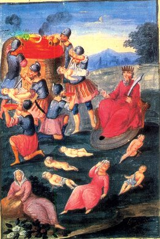
FIGURE VIII
(4ème figure du Livre d'Abraham Juif, in le Testament de Flamel)« Quatrième figure - Est dépeint un champ, auquel y a un roy couronné, habillé de rouge à la Juifve, tenant une espée nue; deux soldats qui tuent des enfans de deux mères, qui sont assises à terre, pleurans leurs enfans ; et deux autres soldats qui jettent le sang dans une grande cuve pleine dudit sang, où le soleil et la lune, descendans du ciel ou des nues, se viennent baigner. Et sont six
soldats armez d'armure blanche, et le roy fait le septiesme, et sept innocens [...] » [Fig. Hiér., cité par Fulcanelli in Myst. Cath.]Un roi puissant tremble devant le berceau d'un enfant :
Elisabeth, peut-être alors à Jérusalem, apprend la funeste nouvelle. Frémissant à la pensée du danger qui menace son enfant, dont la tendre jeunesse appelle le glaive des bourreaux, elle l'entraine d'une main tremblante et précipite ses pas vers le désert..... L'Évangile est muet sur les premières années de saint Jean-Baptiste. Saint Luc se borne à dire: « Il demeura dans les déserts jusqu'au jour de sa manifestation aux yeux d'Israël. » Les commentateurs ont longuement discuté sur le sens à donner à ce mot : « les déserts, » Les uns ont prétendu qu'on devait entendre nécessairement par là une région aride, rocailleuse, inhabitée, hantée seulement par les animaux sauvages; c'est l'acception propre du mot désert, celle qui résulte de l'hébreu dans lequel il signifie terre nue et dévastée. Désert Jean I Cette terre nue et dévastée, on en trouve le sens exact en lisant la Légende du Graal. Il s'agit de la Terre Gaste, où rien ne peut pousser ; il faut y voir la phase de dissolution qui correspond au vieux dragon ou Mercurius senex que Gabriel terrasse avant d'en faire la terre feuillée des Sages ; d'autres disent de cette Terre Gaste qu'elle forme un « espace mental inorganisé », en somme un chaos, cf. Chaos des Sages, Philalèthe. Il faut y voir le Mercure en son premier état, avant son animation. Mais poursuivons : c'est le Carmel qui servit de premier refuge au Précurseur. Voici ce qu'en dit Lamartine :
« Sa ligne d'un vert sombre se détache sur un ciel d'un bleu foncé, tout verdoyant de vapeurs chaudes comme la vapeur qui sort de la gueule d'un four. Ses flancs ardus sont semés d'une forte et mâle végétation. C'est partout une couche fourrée d'arbustes dominés ça et la par les têtes élancées des chênes; des roches grises, taillées par la nature en formes bizarres et colossales, percent, de temps en temps, cette verdure et réfléchissent les rayons du soleil... Les mamelons que l'on aperçoit entre la Palestine et la Syrie maritime sont un des sites les plus doux et les plus solennels à la fois que l'on puisse contempler. Ça et là des forêts de chênes abandonnés à leur seule végétation forment des clairières étendues, couvertes d'une pelouse aussi veloutée que dans nos prairies d'Occident ; derrière, la cime du Thabor s'élève comme un majestueux autel, couronné de guirlandes vertes dans un ciel de feu; plus loin, la cime bleue des monts de Gelboé et des collines de Samarie tremble dans le vague de l'horizon » Désert Jean II On croirait ici une allégorie sur le gîte minier de la prima materia. Plusieurs textes ont comparé la minière de l'une des matières premières avec une forêt de chênes [cf. De Lapide Philosophorum de Lambsprinck]. Et ce vert sombre est celui du prime Mercure, quand il est encore en son « verd ». Le gîte de la prima materia s'extraie, selon les traités d'alchimie, « es cavernes de la Terre ». Voyons cela.
C'est au mont Carmel que se trouvent les grottes d'Elie et des prophètes. « La principale de ces grottes, dit encore Lamartine, évidemment taillée de main d'homme dans le roc le plus dur, est une salle d'une prodigieuse élévation ; elle n'a d'autre vue que la mer sans bornes, et l'on n'y entend d'autre bruit que celui des note qui se brisent continuellement contre l'arête du cap. Les traditions disent que c'était là qu'Elie enseignait les sciences des mystères et des hautes poésies. » [...] Là se rendit l'infortunée Elisabeth. Elle s'ensevelit avec son enfant dans une de ces nombreuses et profondes excavations où les Juifs avaient coutume de se réfugier, aux jours fréquents du péril, en ces temps de troubles politiques. Aussi la légende dit-elle que Dieu offrit un asile à cette mère éplorée en ouvrant devant ses pas les flancs d'un rocher qui se referma sur elle. Des anges prirent soin de nourrir les deux pauvres fugitifs, mais bientôt le petit saint Jean resta seul. Elisabeth mourut quarante jours après son arrivée dans cette retraite, égorgée par les satellites d'Hérode. Désert Jean III Des choses importantes sont dites dans cet extrait : les grottes sont ces cavernes dans lesquelles les alchimistes recueillent le guhr vitriolique ; et ce sont les mystères orphiques, si proches des traditions alchimiques et hermétiques, qui sont enseignées ; la légende affirme que le rocher s'ouvre pour laisser passer le petit Jean - à l'égale du BasileuV de l'oeuvre - afin d'assurer sa protection et sa croissance. Ce nombre de quarante jours est également symbolique [cf. l'humide radical métallique]. La dernière phrase fait évidemment écho à la scène exprimée à la figure VIII et les satellites d'Hérode sont les six soldats dont parle Flamel. Ces anges qui sont évoqués sont ceux-là même qui distillent la rosée de mai : ce sont les agents de liaison entre le Ciel et la Terre mais ici on les trouve sous une forme surprenante qui ressortit davantage de leur appartenance au domaine de Ploutos qu'à celui de Zeus. Il s'agit des bons génies des métaux, des lutins et des farfadets [cf. la Légende de Siegfried]. Revenons à Jean. Il séjourna plusieurs années dans la solitude du Carmel ; à mesure comme le dit l'Évangile « qu'il croissait et se fortifiait en esprit », sa passion pour la retraite grandissait et il dirigea ses pas vers la solitude plus sévère d'Hébron ; il traversa alors une contrée, située entre Jéricho et Engaddi qui offrait l'image d'une admirable fécondité :
Au printemps, leg prairies verdoyantes s'émaillaient de violettes et de roses. La giroflée, le narcisse, l'anémone, le jasmin formaient, par la variété de leurs couleurs, les plus agréables parterres et répandaient dans l'air les plus doux parfums. Les branches odorantes des acacias et des amandiers en fleurs s'épanouissaient au milieu des palmiers gigantesques, des sapins élancés et des cèdres au majestueux feuillage. Pins tard, les lis des champs, dont les Juifs, après la moisson, formaient des guirlandes autour des monceaux de blé, revêtaient leur blanche parure, tissée par la main de la Providence et plus brillante « que celle de Salomon dans toute sa gloire. » En été, autour des habitations, de nombreux figuiers confondaient leurs ombres épaisses avec celle des platanes aux larges feuilles et des genévriers toujours verts. Les grenadiers touffus offraient aux regards charmés tantôt leurs fleurs d'un rouge éclatant, tantôt leurs fruits que l'Epoux du Cantique compare au teint charmant de l'Epouse. [...] Désert Jean IV Ne nous étonnons pas qu'en plein désert, on trouve de telles oasis de verdure : c'est une sorte de jardin des Hespérides où ne manque que le dragon qui défend aux impétrants l'entrée du sanctuaire. Mais manque-t-il vraiment ? Et ne le trouve-t-on pas en fait tout autour de l'oasis ? Ne comprend-on pas que le DESERT est à lui seul le DRAGON incarné. C'est l'image du Soleil brûlant le sable, c'est-à-dire de cette « terre » dont l'alchimiste fait son « miroir du monde. » N'oublions pas que selon saint Matthieu, le désert est peuplé de démons, émanations du dragon élémentaire. C'est dans ce sens, en tout cas, qu'il faut comprendre la Tentation de saint Antoine, qui a fait l'objet d'une admirable image, saisie par Grünewald dans son retable d'Issenheim. Il faudrait encore évoquer la philosophie indienne où le désert est saisi comme symbole de l'uniformité principielle et indifférenciée : n'est-ce pas là l'image du premier Mercure des alchimistes ? Aussi n'est-ce pas sans raison que le désert est l'hiéroglyphe de la fertilité chez l'hermétiste et ce n'est que bien incidemment qu'il faut y voir un monde éloigné de Dieu... Le désert, en grec erhmoV, est la demeure de l'ermite [cf. Tarot alchimique]. C'est un océan pétré qui possède ses propres vagues mais qui est aussi fixe - en apparence - que la mer est mobile [entendez volatile]. Et aussi paradoxal que cela paraisse, le désert est le lieu peut-être le plus obscur qui existe, si on le contracte en er(h)moV, c'est-à-dire si l'on en fait la demeure ou le dème d'Hermès [ErmhV]. Nous n'insisterons pas sur le jardin merveilleux que décrit le commentateur : les enfants d'Hermès savent assez ce que signifient pour eux l'hysope, la vigne, le palmier, le chêne, la térébinthe, le laurier ou encore l'aneth. Il ne sera pas indifférent d'observer qu'avec certaines des herbes amères poussant dans cet oasis, on mangeait l'agneau pascal. Et que l'hysope, dont la tige servit à présenter le fiel et le vinaigre à Jésus crucifié est un haut symbole de l'Art [1, 2, 3]. Il faudrait encore mentionner les bocages, peuplées d'une multitude de colombes bleues, remplissant d'un bruit joyeux Jéricho, la ville des palmiers, et Engaddi dont les plants se couvrirent d'une floraison miraculeuse dans la nuit de la naissance du Sauveur... Il faudrait ici évoquer le parallèle avec les pluies d'or de Rhodes sur lesquelles nous avons déjà insisté ailleurs [cf. Atalanta fugiens]. Quoi qu'il en soit, c'est donc là que Jean va ériger son temple, son monastère et sa cellule sera le rocher aux flancs caverneux, la sombre gorge des montagnes où rode le dragon babylonien. Et ce ne pouvait être qu'au sein des solitudes d'Hébron que « la voix du Seigneur se fit entendre à Jean, fils de Zacharie » selon ce qu'en rapporte la tradition. Mais une épreuve supplémentaire devait attendre Jean : il s'enfonça plus profondément encore dans le désert de Judée, entre Jéricho et le Jourdain. Voici le spectacle qui l'attendait :
Ici rien qu'un sol labouré dans toute son étendue par les vagues énormes d'une mer de sables sans fin ; partout de monotones collines se révélant « d'une teinte rougeâtre et funèbre » aux derniers rayons du soleil, dont la course brûlante s'achève dans un ciel de feu, où plane parfois un grand aigle aux ailes immobiles. L'incomparable pinceau de Lamartine a retracé la physionomie de ces lieux désolés qui avoisinent le lac Asphaltite. «Ce désert dit-il, est une immense plaine à plusieurs gradins qui vont en s'abaissant successivement jusqu'au fleuve du Jourdain par des degrés réguliers comme les marches d'un escalier naturel ; l'œil ne voit qu'une plaine aride; mais, après avoir marché une heure, on se trouve tout à coup au bord d'une de ces terrasses ; on descend par une pente rapide, on marche une heure encore, puis une nouvelle descente , et ainsi de suite. Le sol est un sable blanc, , solide et recouvert d'une croûte concrète et saline produite sans doute par les brouillards de la mer Morte qui, en s'évaporant, laisse cette croûte de sel : il n'y a ni pierre, ni terre, excepté en approchant du fleuve ou des montagnes ; on a partout un horizon assez vaste. » Ces imposantes solitudes, toutes peuplées des souvenirs de l'Ancien et du Nouveau Testament, s'étendent au nord-ouest de la montagne des Oliviers et portent le nom de Désert de la Quarantaine, parce que le Rédempteur y a jeûné quarante jours et quarante nuits. On montre encore aux voyageurs les pierres que le démon lui disait de changer en pains. Cette contrée peut être déterminée par une ligne qui, partant des portes de Jérusalem, se prolonge an couchant de la mer Morte, et va se réunir vers le sud aux sables arabiques; c'est un sol calciné, bouleversé dans toute son étendue et sur lequel a passé la vengeance céleste, « Un feu s'est allumé dans ma colère, a dit le Seigneur, et il brûlera jusque dans les entrailles de l'enfer ; il dévorera la terre avec ses germes et il consumera les fondements de la montagne.» Aux abords de la Mer du Désert, les ondulations de terrain diminuent. La pente vient mourir doucement an rivage. Des sables d'un jaune foncé enlacent d'un cercle d'or les ondes du lac Asphaltite, polies et brillantes comme du plomb fondu. Désert Jean V Cette teinte funèbre, c'est celle du Soufre corrompu agonisant dans l'étreinte du dragon, du Mercure ; il est remarquable d'observer que cette agonie n'en constitue pas moins l'aurore de l'oeuvre. Comme nous l'avons fait observer, cette aurore correspond au crépuscule vespéral. Autrement dit, quand la nuit « tombe » sur terre, l'oeuvre apparaît avec les planètes et les étoiles ; le firmament est paré des constellations qui indiquent les étapes du magistère en un grandiose test de Rorschach : l'univers, à la mesure de l'esprit de l'homme. C'est là cette grande éclipse de Soleil et de Lune dont parle Lulle et qui correspond à ce jeûne de quarante jours. Mais l'époque est bientôt venue de l'entrée en fonction des vecteurs spirituels par lesquels Jean va s'exprimer : la prédication et le baptême.
Ce sont les Pharisiens, couverts de vêtements magnifiques ornées de broderies et bordées de pourpre, couleur hyacinthe, qui seront les premiers témoins du prêche de Jean. Curieusement, ces personnages, malgré leur faste, ont attaché sur leurs fronts et autour de leur bras gauche des bandelette de parchemin où nous pouvons deviner une variante des phylactères. Arrêtons nous ici un moment. Le nom même de Pharisien signifie « séparation » parce qu'ils semblent se distinguer des autres Israélites par une observance plus rigoureuse des pratiques de la Loi. On peut se demander si les Pharisiens n'ont pas joué un rôle dans le développement de l'Art sacré ; ce passage de la Bible expliquée... le ferait croire :
« Toutes les maladies inconnues (et quelle maladie au fond ne l'est pas !) leur parurent des possessions de démons. Ils [les Pharisiens] se vantèrent de chasser ces diables avec des exorcismes et une racine nommée barath. L'un d'eux forgea un livre intitulé la clavicule de Salomon, qui renfermait ces secrets. On peut juger si leur pouvoir de chasser les diables, pouvoir dont Jésus-Christ lui-même convient dans l' évangile de St Matthieu, augmenta leur crédit. On les révérait comme les interprètes de la loi ; on s'empressait de s'initier à leurs mystères. Ils enseignaient la résurrection et le royaume des cieux. Nos évangiles nous apprennent avec quelle véhémence Jésus-Christ se déclara contre eux. Il les appelait hypocrites, sépulcres blanchis, race de vipères. » [La Bible enfin expliquée par plusieurs aumôniers de S.M.L.R.D.P., Voltaire, Genève, 1776]
Et au vrai, qu'est-ce que le régime de Jupiter dans l'oeuvre, si ce n'est un sépulcre blanchi ? Qu'est-ce que la Résurrection, si ce n'est - compris dans le petit monde des alchimistes - la renaissance du basileuV ? Et les Pharisiens ne peuvent-ils pas être considérés comme les agents qui permettent à Jean de sortir du désert, de prêcher ? Opération où l'on peut voir la sortie de la grande éclipse... Du reste les croyances des Pharisiens vont dans ce sens : immortalité de l'âme, attente de la Résurrection, récompenses futures et peines éternelles. Outre les Pharisiens, Jean prêcha en direction des Saducéens, c'est-à-dire des Justes : mais il paraît que l'apparente sévérité de ce peuple n'est que le masque d'un égoïsme où leur vie s'écoule, insensible aux joies comme aux douleurs d'autrui ; aussi l'existence des Saducéens a-t-elle été comparée à un fleuve qui reflète avec une égale indifférence tantôt l'azur du ciel, tantôt les nuées tempétueuses. Cette indifférence, cette neutralité en somme, Fulcanelli nous en a donné un exemple dans l'examen du tympan de l'église saint Hilaire, près de Melle [cf. rébus de saint Grégoire-sur-Vièvre]. C'est finalement vers les Esséniens que nous tournerons nos regards. Ils montrent une grande austérité dans leur habitus ; bien avant le lever du soleil, ils se mettent en prière ; dès le point du jour, ils se livrent à des travaux champêtres ; leur extrême sobriété explique le grand nombre de vieillards qu'on aperçoit parmi eux ; ils croient à l'existence des anges, aux destinées immortelles et, comme les Pharisiens, à des peines et des récompenses futures. On donne à certains d'entre eux le nom de Thérapeutes car ils se vouent entièrement à la contemplation.
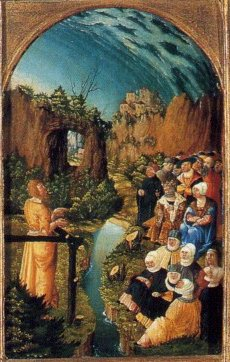
FIGURE IX
(retable de saint Jean Baptiste, Prédication, Allemagne du sud, 1526)Nous arrêterons là l'énumération des esprits, fort divers d'ailleurs, qui firent l'objet du prêche de Jean. Pour l'illustration de notre propos [qui n'est que de mettre en lumière certaines analogies, parfois méconnues, entre les légendes du passé et l'Art sacré des Égyptiens], il suffira d'observer que les Pharisiens arborent des signes du Soufre [riches vêtements ornés de pierreries], signes auxquels s'ajoute le besoin ou le souci d'une protection, d'un abri par les phylactères qu'ils portent : c'est une indication sur la nécessité que doit avoir l'Artiste d'examiner le sens du mot Hypérion [uperion], riche de cabale et que l'on a examiné dans d'autres pages. Les Saducéens ressemblent spirituellement au « long fleuve tranquille » de l'eau mercurielle étoilée des Sages ; enfin, les Esséniens mettent en avant le caractère permanent de cette même eau, caractère sans lequel le Mercure ne sert à rien et sans lequel la réincrudation n'est pas possible. Nous n'oublierons pas les Samaritains : voyageurs pressés, étrangers pour les habitants de Judée, mais respectueux de la Loi. C'est une indication sur le danger qu'il y a pour l'Artiste à trop vouloir pousser son feu, de peur de brûler ses fleurs. Pour cela, il lui faudra étudier à fond les textes sans se contenter comme l'indique perfidement Basile Valentin, de « brûler ses livres » lorsqu'il blanchira le Laiton. La figure IX, détail d'un retable de Saint Jean Baptiste, montre plusieurs emblèmes de l'Art : observez de quelle étrange façon le ciel à l'air de tourner sur lui-même, à droite et aussi sa couleur verte très particulière où l'on devinerait presque une cristallisation si l'on ne savait que nous sommes au Ciel et non dans la mer. Nous observons en outre une grotte ou une caverne, taillée dans la roche, marque du dragon babylonien, du vitriol romain. Un ruisseau, notre eau permanente, coule au pied du saint. Le couple alchimique, un roi couronné vêtu de rouge et à côté la reine, vêtue de bleu, complète cette scène où, pourtant, aucun hermétisme ne se devine. Si l'on devait résumer l'analogie entre la mission de saint Jean et le travail au fourneau, on pourrait écrire que Jean fait accéder à l'athanor et que Jésus sur la croix - la Crucifixion, cf. retable d'Issenheim - en constitue la sortie ; telle la chambre centrale du labyrinthe de Salomon où l'Artiste se fait guider par son fil d'Ariane, ici c'est la Foi qui constitue la trame de l'histoire, avec un point d'orgue : le baptême.
6. La prédication et le baptême
Des acclamations retentissent à présent au passage de Jean, devant une foule importante, scandant : « Le Baptiste ! Voici le Baptiste ! » Voilà qui évoque par delà les siècles et les siècles les mérelles ou bénitiers dans lesquels le pèlerin vient se signer, refaisant, comme dans un écho lointain, le geste qui fut à la base de tout le christianisme. On sait que, par cet acte, le Corps comme l'Âme sont régénérés ; c'est aussi une grande vérité hermétique quand elle est appliquée au petit monde de l'alchimiste. C'est le procédé de « trempe » par lequel l'Airain des Sages est formé d'abord, pour devenir ensuite le Laiton. Jean, si l'on peut dire, fait accéder à la première forme du Rebis et Jésus à la seconde. Voyez ce que nous en disons au chapitre de la Salamandre de Lisieux et du Dragon de Besançon. Cela, toutefois, n'est pas toujours allé sans problème et Jean a dû s'écrier :
« Race de vipères, qui donc vous a appris à fuir la colère à venir ? Faites de dignes fruits de pénitence, et ne croyez pas qu'il suffise de dire : Nous avons Abraham pour père, car, je vous le déclare. Dieu, peut faire naître de ces pierres mêmes des enfants à Abraham ! » En prononçant ces mots, saint Jean étendait majestueusement la main vers les douze pierres énormes apportées, du milieu du fleuve, par les chefs des douze tribus d'Israël, et amoncelées sur le rivage, lors du passage miraculeux du Jourdain par Josué, monument que les Juifs appelaient l'autel du Témoignage, et qui avait fait surnommer cet endroit le « Gué des douze pierres. » La prophétie du Précurseur s'est accomplie. Les descendants d'Abraham selon la chair ont péri, et Dieu lui a suscité des enfants du sein des Gentils et des idolâtres dont les pierres sont ici la métaphore. Prédication Jean I On peut voir, dans ces paroles de Jean, tout le processus de la sublimation philosophique. La vipère représente la corruption qu'il faut enlever au métal pour l'élever au niveau de quintessence - par son ouverture qui fait s'écouler sa chaux, son âme dans le Mercure ou Esprit - ; les fruits de pénitence correspondent à l'état des soufres, dissous, qui attendent leur rédemption dans la réincrudation, véritable « retour des cendres. » Et que dire de ces douze pierres où l'on peut voir un équivalent du zodiaque [voyez supra les douze pierres de l'Ephod]. Le « Gué des douze pierres » peut trouver sa contre partie dans le détroit des Dardanelles où jadis, Jason demanda à Aristhée de faire élancer sa colombe afin de passer le gué des roches cyanées ou symplegades. Il faut y voir une allégorie de plus sur la dissolution et sa fin qui, nécessairement, est une conjonction pourvu que l'Artiste ait bien fait son travail. Faisant contrepoint à ces premières paroles, Jean s'écrie encore :
Le jeune Prophète s'adresse ensuite à la foule, et, faisant allusion à la destruction imminente de Jérusalem, que lui dévoile le sombre avenir, il poursuit son discours en disant : « La cognée est à la racine des arbres; tout arbre qui ne produit pas de bons fruits sera coupé et jeté au feu.» Prédication Jean II Il y a là un rapport à l'Arbori solare, lorsque l'Artiste doit élire son Soufre pour le travail futur ; on le présente souvent comme Hercule face à l'Hydre à multiples têtes dont l'une seulement est immortelle [cf. Fontenay]. Il nous faudrait encore évoquer un souvenir de lecture du tome II des Demeures Philosophales, lorsque Fulcanelli commente l'un des caissons du château de Dampierre-sur-Boutonne où l'on voit deux arbres secs de part et d'autre d'un arbre vert [cf. rébus de saint Grégoire-sur-Vièvre].
FIGURE X
(caisson n°6 série 3, galerie du château de Dampierre)Ces arbres secs sont comme les Corps et âme corrompus, secs, dont l'opération voilée par le baptême, fournit un nouveau composé vif et « verd ». Tel est le sens du texte contenu dans le phylactère qui ne fait exprimé d'ailleurs que la nécessité où est l'Artiste de trouver son Leo viridi dans la terre et les cendres d'arbustes. Ce n'est point autrement que s'est exprimé Flamel quand il a décrit le mystérieux - et fabuleux - Livre d'Abraham Juif dont on a parlé à plusieurs reprises... Telle est aussi le sens hermétique de la pénitence :
« avant la prédication de saint Jean, elle était également nécessaire pour mériter le Ciel mais le christ nous apprend seulement qu'auparavant personne n'avait encore enseigné, de manière aussi claire - s'il en fut - le moyen de le conquérir » [adapté de Denys le Chartreux].
Un autre point important a été vu par Jean dans son prêche : l'aumône :
Après avoir entretenu son auditoire du royaume de Dieu et de la nécessité de le conquérir par la pénitence, le Baptiste indique l'exercice de l'aumône comme un puissant moyen pour les hommes de fléchir la colère du ciel et d'échapper au feu qui attend tout arbre stérile. Que devons-nous donc faire ? s'est écriée tout à l'heure la foule anxieuse. Et Jean, répondant, lui dit : « Que celui qui a deux ( et non pas DES ) tuniques en donne une à celui qui n'en a pas, et que celui qui possède des vivres les partage avec ceux qui en manquent. » En d'autres termes, pratiquez les œuvres de miséricorde ; ne vous contentez pas de donner votre superflu, faites plus : partagez même le nécessaire avec l'indigent; traitez et aimez votre prochain comme vous-même. Prédication Jean III Rapportée au monde de la chimie, ces réflexions éclairent notablement l'oratoire de l'impétrant. Voyons, qui du plomb ou de l'or a le plus de miséricorde ? Voilà qui éclaire, du coup, l'une des énigmes nombreuses que Fulcanelli a semées dans sa trilogie :
« C'est donc avec beaucoup de raison que certains auteurs assurent que l'or et le mercure ne peuvent concourir, en tout ou en partie, à l'élaboration de l'oeuvre. Le premier...parce que son agent propre en a été séparé lors de son achèvement, et le second, parce qu'il n'y a jamais été introduit. » [DM, I, p. 272]
On pourrait même, si l'on nous entend bien, affirmer que ce doit être le cuivre qui est le plus charitable ! Marc-Antoine Gaudin n'a-t-il pas, en effet, été surpris des multiples et variées colorations que l'on peut en obtenir, au point qu'il a pu dire que c'était un véritable Protée ? L'aumône chimique, on l'aura deviné, c'est la liaison ionique. Il y aurait beaucoup à dire sur ce mot « ionique », à commencer par sa racine ion mais nous avons déjà rabâché ce point de science... Poursuivons.
Au spectacle d'une si haute sainteté, que rendaient plus resplendissante encore des enseignements sublimes et une parole entraînante, le peuple, dit l'Evangile, était dans une grande suspension d'esprit, et tous pensaient en eux-mêmes si Jean ne serait pas le Christ. Déjà cependant, le fils de Zacharie avait rendu au Messie un premier et solennel témoignage par le baptême de pénitences, puisqu'on l'administrant il disait au peuple, d'après les Actes des Apôtres et le sentiment des Pères et des Docteurs de l'Eglise, «de croire en Celui qui allait venir après lui. » Mais ce premier témoignage n'avait pas suffi [...] C'est pourquoi Jean dit en présence de tout le peuple : « Pour moi je vous baptise dans l'eau, mais il en viendra, un plus puissant que moi dont je suis indigne de délier ta chaussure. C'est lui qui vous baptisera dans le Saint-Esprit et dans le feu. Son van est en sa main, et il nettoiera son aire; il amassera le blé dans son grenier, et il brûlera la paille dans un feu qui ne s'éteint pas.» Prédication Jean IV Dans une grande suspension d'Esprit : certes ! si l'on tient compte que Jean, par cabale, fait accéder au centre de l'athanor jusqu'à l'oeuf philosophique. Du moins celui dont parle John Dee dans sa Monade Hiéroglyphique. Mais nous avons dit que Jean arborait le côté mercuriel du magistère tandis que le Christ en fait voir son côté soufré. Il est donc naturel que Jean exhortât le peuple « de croire en Celui qui allait venir après lui. » N'est-ce pas là le geste, que, par delà la mort, il réalise dans la Crucifixion de Grünewald ? Nous avions l'EAU avec le Mercure ou du moins une partie du Mercure ; selon toutes nos études de symbolisme, le FEU va toujours avec l'EAU, puisque les alchimistes pratiquent sur leurs matières des laveures ignées. Nous le tenons avec ce que dit Jean au peuple : « c'est lui qui vous baptisera... dans le feu. » Ce n'est pas tout, puisque nous voyons apparaître dans le van un instrument aratoire dont parlent les alchimistes modernes. Voyez ce que nous en disons dans le commentaire de la Nouvelle Lumière Chymique d'Alexandre Sethon [note 61] et dans l'emblème IX de l'Atalanta fugiens. Nous ajouterons que l'iconographie hindoue attribue le van à plusieurs divinités qui se situent plutôt du côté « luciférien » et notamment dans l'équivalent du Typhon grec : Dhumâvat qui personnifie la destruction et le dénuement [épithètes que l'on peut prêter au premier Mercure]. C'est cependant une phase obligée et le drainage des impuretés et scories est gage de la dépuration spirituelle à venir. Le blé est l'équivalent de l'or alchimique, « or enté » pour l'heure, qui ne demande qu'à croître et se multiplier sous l'effet de la « levureou levain » alchimique, ou l'artifice du Mercure.
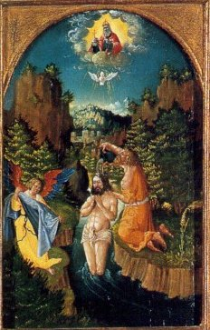
FIGURE XI
(retable de saint Jean Baptiste, baptême du Christ, Allemagne du sud, 1526)Cette peinture représente l'allégorie du passage des roches cyanées dans le voyage des Argonautes : une colombe, à l'instant suprême du baptême du Christ, vient s'interposer entre deux gros rochers qui surplombent la scène. Envoyée par l'Esprit Saint, la colombe est gage du recouvrement ultérieur du Soufre et montre que l'Artiste a travaillé canoniquement.
Le Christ, constitué le Juge souverain de l'humanité, après en avoir été le Sauveur, viendra juger les vivants et les morts, et, semblable au laboureur qui vanne pour séparer le grain de la paille, il opérera la séparation entre les justes et les réprouvés. Saint Jean empruntait cette métaphore aux habitudes des Juifs, presque tous alors agriculteurs. Après la récolte, on plaçait les gerbes en cercle autour de l'aire, puis on les faisait piétiner par des bœufs, auxquels la Loi défendait de lier la bouche pendant l'opération ; ensuite, on prenait une large pelle chargée de grain, on se mettait contre le vent et l'on pratiquait le vannage en secouant légèrement cette pelle. L'opération terminée, on nettoyait l'aire. Aussi le Baptiste, continuant la comparaison, poursuit-il en disant : « Et il nettoiera son aire ; » rapprochement d'autant plus frappant, que le Temple, personnification du peuple Juif, avait été construit sur une aire. Prédication Jean V Cette séparation entre les justes et les réprouvés est à l'image de celle que réalise l'alchimiste, dans le 2ème Oeuvre, quand, mélangeant Arès et Aphrodite, l'Esprit part dans le récipient tandis que reste, dans la cornue, le principal constituant du premier Mercure [cf. arcanum duplicatum]. Quant aux boeufs, ils évoquent les Sept Boeufs de labour, qui forment les étoiles entourant la polaire, sur laquelle se dirigent les méridiens du Monde : c'est l'Aimant des Sages [cf. Matière]. L'alchimiste brûlera alors sa paille exactement comme il est indiqué sur une gravure du Théâtre de l'Astronomie Terrestre, attribué à l'illuminé Edward Kelly. Mais voyons l'épisode du baptême du Christ, l'événement peut-être le plus important avec la Crucifixion, en ce qu'il consistait en une conjonction absolue entre les deux Esprits : n'oublions pas que, sur la figure III, Jean n'apparaît qu'au moment précis où Jésus meurt sur la croix, deuxième conjonction des Principes. La 3ème conjonction interviendra à la Résurrection. Nous allons à présent revenir sur un arcane qui fait de la résistance : la colombe. Médiateur évident entre le Ciel et la Terre, elle semble manifester la présence du Soufre et la fin de l'époque de la dissolution.
Ondes bénies du Jourdain ! deux grands souvenirs vous désignaient à l'ineffable honneur de recevoir et d'ensevelir un instant le nouvel Adam, et, avec lui, toute l'humanité coupable. « C'est, en effet, dît l'abbé Doublet dans son admirable ouvrage sur saint Thomas, c'est en traversant le Jourdain que les enfants d'Israël entrèrent dans la terre de promission ; c'est en passant par les eaux régénératrices du baptême que l'humanité nouvelle fait son entrée dans la terre promise, dans la patrie d'en haut. Au moment où le char de feu allait emporter Elie dans les cieux, ce Prophète divisa les eaux du fleuve. A ces deux souvenirs se rattache lu baptême chrétien : " Baptême dans l'eau et le feu. " L'eau purifie, le feu remplit les âmes des ardeurs de la charité divine ; le char enflammé, la grâce, emporte l'homme dans les sublimités de la vie déiforme et le dépose dans les bras et sur le cœur de Dieu. » Baptême Jean I Il faut se ranger à l'avis des commentateurs qui ont fait observer qu'un certain laps de temps s'était écoulé entre le début de la prédication de Jean et le baptême du Christ. Si le lecteur a bien compris le sens hermétique de la prédication, il n'aura pas de peine à réfléchir à ce mystérieux délai qui doit nécessairement exister entre la préparation du Mercure, l'intervention de Vulcain ardent [Héphaistos] et l'infusion des Soufres dans le bain des astres. Quant au char de feu évoqué, il nous fait penser à celui, devenu fou, de Phaéton, qui obligea Zeus à intervenir parce qu'il risquait de brûler la Terre entière ; voilà de quoi méditer sur l'impulsion mesurée à donner au feu secret afin qu'il se tienne à une distance raisonnable de la Terre, sans qu'il embrase pour autant, le ciel firmamental.
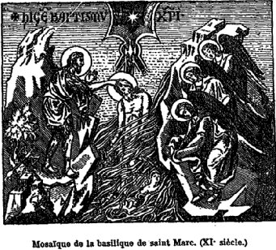
FIGURE XII
(baptême du Christ)
Or, ayant été baptisé, Jésus sortit aussitôt de l'eau, et voici que les cieux lui furent ouverts; il vit l'Esprit de Dieu descendre sur lui en forme de colombe. Et au même instant une voix se fit entendre du ciel qui disait : " Celui-ci est mon Fils bien-aimé en qui j'ai mis toutes mes complaisances. " Baptême Jean II Dans le symbolisme de la philosophie alchimique, la colombe est censée désigner :
« l'Âme immaculée, seule capable de parvenir aux grands secrets hermétiques. » [Michel, Clébert, Légendes et traditions de France, Paris, Denoël, 1979]
Malheureusement, on ne comprend pas plus ce que représente la colombe... Qu'elle ait rapport au Soufre, nul ne le conteste mais à quelle phase du magistère intervient-elle ? Aristhée en lâche une au moment où le vaisseau Argo franchit les roches cyanées, indication de la fin de la période de dissolution. C'est évidemment dans ce sens qu'il faut interpréter celle qui apporta, après le déluge, un rameau d'olivier à Noé, indiquant la fin de la colère divine. Philalèthe nous parle aussi de colombes volant sans ailes, évoquant qu'un milieu mystérieux semble sustenter les volatiles, milieu qui ne peut être que le Mercure. Et c'est, en fait, de ce Mercure qu'elle vit et tire sa subsistance car sur certains vases funéraires grecs, on la voit buvant à un vase qui symbolise la source de la mémoire, vase qui figure celui dit « de nature » qui renferme l'eau permanente des Sages. Mais il y a une sorte de contradiction entre le baptême et la Crucifixion ; sauf à considérer celle-là comme une sublimation et non comme une dissolution...
Quatre circonstances solennelles, dit saint Thomas, marquent le baptême de Jésus-Christ et préfigurent les effets du nôtre : l'eau où Jésus-Christ se plonge et d'où il s'élève, les cieux qui s'ouvrent, la descente de l'Esprit sous la forme de la colombe, la voix du Père qui retentit. Baptême Jean III N'y a-t-il pas là, en effet, matière à discuter quant à savoir si la dissolution n'est pas figurée par le baptême et non pas par la crucifixion ? Fulcanelli affirme, dans le Mystère des Cathédrales, qu'il faut « crucifier avec trois pointes de fer », voulant parler des réitérations d'une même opération, où l'on peut voir sans peine les sublimations. Nous touchons à l'un des mystères les plus hauts de l'oeuvre... Si l'on considère que le Christ est le chef de l'humanité déchue et qu'il s'identifie à elle, c'est en elle qu'il se plonge et s'ensevelit sous les eaux, image du bain des astres où le roi et la Reine doivent enlever tous leurs vêtements [allégorie de l'ouverture des métaux]. C'est d'elle qu'il reparaît, glorieux, sans tache, saint et immaculé à l'image de la colombe contenant l'Esprit saint.
La forme de la colombe, choisie par l'Esprit-Saint, attire toute l'attention de saint Thomas et provoque ses plus belles études. Par cette apparition le baptême est représenté, à la fois, dans les dispositions qu'il requiert et la vie nouvelle où il introduit l'homme; dans ses effets en chaque âme, dans son immense et universel résultat qui est la formation de l'Église de Dieu.La colombe préfigure aussi l'effusion de la grâce dans l'âme, et c'est cette effusion qui est le grand effet du baptême. Columba fuit ad repraesentandam, influentiam Spiritus sancti. Dieu dépose dans l'âme, avec la grâce sanctifiante, ces divines influences, ces inclinations douces et puissantes que la théologie nomme les dons du Saint-Esprit, et que la colombe figure encore avec une saisissante vérité. Baptême Jean IV Nous trouvons là, sans doute, l'explication du miracle de la colombe : l'effusion de la grâce dans l'âme, c'est cette captation du rayon solaire igné que l'Artiste doit réaliser lors du retour des cendres, opération se déroulant dans le signe du Sagittaire, qui trouve son accomplissement dans le Scorpion [pour des développements, cf. zodiaque alchimique]. On peut trouver comme équivalent de la grâce Charis [cariV], épouse d'Héphaistos, déesse de la végétation et dispensatrice de la beauté, du génie et de la gloire. Les Charites étaient chargées de concentrer sur la Terre les rayons du Soleil : elles prennent l'apparence de trois jeunes femmes nues dont l'une regarde dans une direction opposée à celle où les deux autres dirigent leurs regards. L'une tient une rose, l'autre un dé à jouer et la troisième une branche de myrte. Dans ce contexte, notez que la myrte est superposable à la grenade, la colombe ou encore la rose. Sur le dé, voyez l'Introïtus, VI. Pour en revenir à la colombe, son existence est-elle du même ressort que les couleurs de l'oeuvre ? En somme, d'autres yeux que ceux du christ virent-ils les cieux s'ouvrir ? De l'aveu des commentateurs, ce miracle ne se produisit que de manière spirituelle : le ciel, à en croire saint Jérôme, ne fut point ouvert par une brèche sensible et ne le fut qu'aux yeux de l'esprit ; de même la colombe ne fut vue que de Jean et du Christ : le peuple l'ignora. Fut-ce même une colombe ? Car certains disent qu'il s'agissait de langues de feu, de traits de lumières, de rayons ignés...
7. la décollation de saint Jean
Nous en venons à l'épisode tragique : Jean-Baptiste dénonce la liaison incestueuse entre Hérode Antipas et Hérodiade, la femme de son frère, Hérode Philippe. Hérode, qui craint Jean le Baptiste, n'ose le condamner à mort. Il se contente de l'emprisonner, ce qui ne satisfait pas Hérodiade. Celle-ci demande à sa fille, Salomé, de danser pour Hérode. Ebloui par la jeune fille, Hérode lui fait le serment de lui donner ce qu'elle veut. Sur l'injonction de sa mère, elle demande la tête de Jean-Baptiste, qu'Hérode est contraint de lui accorder.
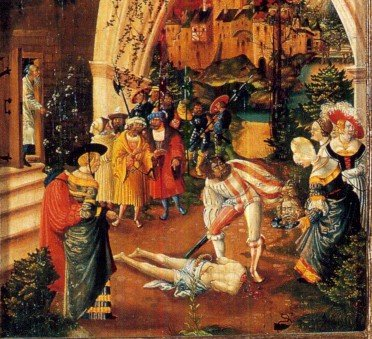
FIGURE XIII
((retable de saint Jean Baptiste, décollation de Jean Le Baptiste, Allemagne du sud, 1526)Le roi fut attristé; mais, à cause de ses serments et des convives, il ne voulut pas lui faire un refus. Il envoya sur le champ un garde, avec ordre d'apporter la tête de Jean Baptiste. Le garde alla décapiter Jean dans la prison, et apporta la tête sur un plat. Il la donna à la jeune fille, et la jeune fille la donna à sa mère. Les disciples de Jean, ayant appris cela, vinrent prendre son corps, et le mirent dans un sépulcre. (d'après Marc, 6.14-29)
Au plan alchimique, le lecteur sait déjà, s'il a examiné nos études de symbolisme, qu'il y a au moins deux séparations dans l'oeuvre, qui ont fait l'objet de nombreuses allégories. Ce qu'il y a de nouveau ici, c'est que Jean est un héros au lieu que, le plus souvent, dans les légendes qui se rapportent à ce point de science, on assiste à la décapitation de monstres, tels que le dragon ou la Gorgone. Ces séparations intéressent des composés dont l'un est plus volatil que l'autre ou qui a une différence de densité telle qu'il tombe [cado, cassito] au fond d'un récipient laissant l'autre partie dissoute dans le liquide ou même, surnageant. On peut citer quelques séparations qui procurent ce que l'on appelle un Caput mortuum, cette expression étant très bien illustrée dans les planches du Donum Dei.- attaque du nitre ou du tartre par de l'acide vitriolique [on obtient de l'arcanum duplicatum] ;
- dissolution de l'alun [on obtient la terre de l'alun et de l'arcanum duplicatum] ;
- séparation de l'or et de l'argent par l'eau forte ;
- séparations philosophiques [on sépare les « éléments »] des traités spéculatifs ;
- séparation initiale par le 1er agent ;
- séparation de l'âme d'avec sa partie matérielle [crucifixion] ;
- séparation trinitaire ;
- extraction du Soufre par l'argent-vif des philosophes ;
- séparation des eaux [allégorie du Philalèthe] ;
- séparation de la lumière des ténèbres [cf. traité de Crasselame Chinois] ;
- déplacements par différence de pression et/ou de température [expériences de Sainte Claire Deville] ;
- séparation primordiale des quatre Eléments ;La liste n'est pas close. Mais pour l'heure, ce qui nous intéresse c'est le rapport entre Jean et Hérodiade.
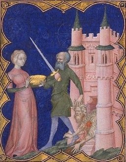
FIGURE XIV
(Décollation de saint Jean-Baptiste. - BNF, LAT 18014 - fol. 214
Petites Heures de Jean de Berry France, Paris XIVe s, détail)L'examen de son nom va nous apporter une réponse en accord avec la cabale hermétique : Hérodiade [HrwdiaV] peut être scindé en Hrw, prêtresse d'Aphrodite, et dia, qui désigne l'action de séparer. Dès lors, la décollation de Jean présente un rapport - de pure cabale évidemment, tout cela doit être pris avec un grain de sel - avec l'action d'obtenir un composé d'Aphrodite. Ce composé peut être aisément trouvé, si l'on se souvient de nos schémas de laboratoire, de ceux en particulier où l'on traite un sel de potassium par de l'acide vitriolique. Aussi faut-il prendre avec réserve tout ce qu'écrit E. Canseliet dans le chapitre Conjonction et Séparation de son Alchimie Expliquée sur ses Textes classiques [Pauvert, 1972, 1980] où le disciple de Fulcanelli semble s'être montré particulièrement envieux.
III. Fragments sacrés : une lecture artistique
[dans cette partie, nous intercalons des passages de l'ouvrage d'Ernest Razy à nos réflexions]
Légende artistique I La première pierre de l'édifice culturel et cultuel de Jean, c'est donc sous terre qu'il faut aller la chercher. Dans les catacombes ; nous avons dit ailleurs que l'un des caractères les plus remarquables de la littérature hermétique, caractère qui est celui de tous les livres sacrés de l'Inde, est qu'elle présente les doctrines sous deux formes, par un langage simple et par des figures symboliques. Ce symbolisme, identique à celui des premiers chrétiens tel qu'il se voit dans les peintures des Catacombes, dans les rituels de l'Église et encore ailleurs, signale les auteurs de ces livres comme affiliés à une société secrète, qui ne voulait pas livrer ses dogmes à la curiosité, ni les laisser s'amoindrir dans la discussion. Les symboles les couvraient et les fixaient. Quant à cet ours coiffé, il nous rappelle par arca l'urne funéraire où l'Artiste met ses matières à cuire. La pierre de Tibur [ saxum Tiburnicum ] paraît être une variété de tuf [ roche poreuse légère ] calcaire connue sous le nom de travertin [dont parle E. Canseliet dans ses Deux Logis Alchimiques, à propos de la porte de la villa Palombara, à Rome, cf. réincrudation]. Le tophus, tuf de Vitruve et de Pline, était probablement notre calcaire grossier, presque entièrement composé de débris coquilliers marins, réunis par un ciment calcaire auquel il doit sa consistance. C'était sans doute le tophus qui servait à la construction des édifices publics de l'antiquité grecque et romaine, par exemple le temple de Jupiter à Elis. Ce tuf sert de transition entre la pierre calcaire brute et celle que l'on voit utilisée pour préparer les grands bénitiers de nos églises, qui rappellent les mérelles de Compostelle, chères à Nicolas Flamel. En grec, le tuf - pwroV - c'est aussi toute espèce de concrétion où l'on peut voir l'apparence d'une cristallisation et par pwrow, il faut y voir le moyen, pour l'alchimiste, de durcir son coeur non pas certes pour le rendre insensible, mais pour le fortifier. Du reste, cette opération de fortification est bien exprimée par la figure de Cybèle que l'on voit coiffée de tours, autre version de notre ours coiffé, en liaison avec la constellation du même nom qui, par l'allégorie, désigne l'Aimant des Sages.
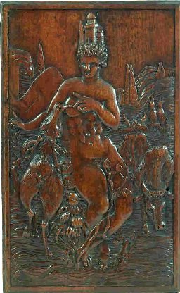
FIGURE XV
(déesse coiffée de tours qui allaite un cerf de ses multiples seins)On peut voir dans la figure XV l'image d'une déesse qui tient à la fois de Cybèle et d'Hécate. Et aussi de l'Elixir dans sa formulation traditionnelle, non pas celle où le vulgaire voit « l'Elixir de longue vie » qui a fourni à Balzac la matière d'un beau roman, mais celle où l'alchimiste voit en son Mercure, la nourrice de sa matière seule propre à assurer la réincrudation des Soufres. On y a vu un certain nombre d'allégories dont, d'ailleurs, Fulcanelli s'est fait l'écho dans le Myst. Cath. : Moïse frappant le rocher, Jonas sortant, trois jours après, du ventre de la baleine, symbole d'immortalité ; c'est Daniel dans la fosse aux lions ; les trois jeunes hommes dans la fournaise ou encore les Orantes, tant de fois reproduites sur les tombeaux des martyrs. Les alchimistes ont coutume de dire qu'il s'agit là de l'Entrée Ouverte au Palais fermé du Roy comme l'exprime l'un des médaillons du portail central de Notre-Dame, à Paris, où l'on voit l'un des Vertus et Vices : l'Inconstance. Une foule de témoignages nous apprennent que les portes des baptistères étaient ornées de tentures relevées de chaque côté : elles formaient des espèces de voiles [vela] tissées d'étoffes d'or où les traits du Baptiste se trouvaient fréquemment reproduits. Ces tentures ou voiles [istion] cachent un point remarquable de science : le moyen de fixer le vent, exprimant l'artifice du Mercure. Il s'agit là pour l'Artiste de faire tourner la roue tout en recherchant l'immobilité. Paradoxe facile à résoudre : il suffit de se rappeler que l'alchimiste cherche à capter, du sein de ce Mercure noir, la lumière, c'est-à-dire le Soufre incombustible qui forme son « bouton de retour », belle allégorie imaginée par E. Canseliet [cf. Alchimie expliquée sur ses Textes classiques]. Cette action de fixer la teinture sur la toile à son pendant dans le métier de tisserand où l'ouvrier va et vient devant le métier, image où l'on peut deviner la Toyson d'or [Ariès] prête à être imprégnée du Soufre par l'astringent [stupteroV] qui le fixera de façon radicale [cf. Teinture]. Ce cerf qui se nourrit aux seins multiples est à l'image du Mercure fugitif formé d'innombrables ruisseaux qui semblent s'échapper d'une rive rocheuse, reprenant la figure de Moïse faisant jaillir de la roche l'onde vivifiante ou fontaine de jouvence [cf. FIGURE XII]. Une miniature du bénidictionnaire de saint Ethelwold, évêque de Winchester, qui vivait au Xe siècle, retrace la scène du Baptême. Le Jourdain y est représenté avec des cornes dorées. On voit par ailleurs à la bibliothèque de Turin, dans un manuscrit du XIIe siècle, une enluminure du même
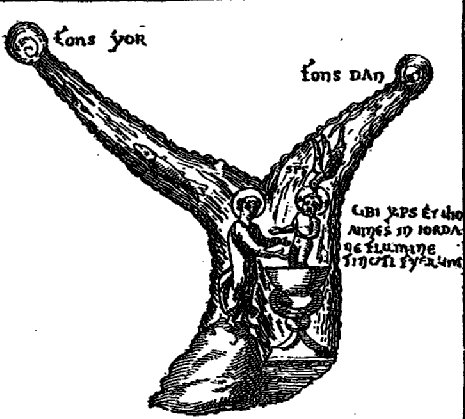
FIGURE XVI
(le Jourdain)genre qui se rattache à une question controversée : celle de savoir si saint Jean a été baptisé par Jésus. Voilà un thème qui pourrait paraître hors-sujet. Rien de tel, comme le commentaire suivant va le montrer tout de suite.
Ce manuscrit, dont le texte contient des récits, parfois apocryphes, d'événements de l'Ancien et du Nouveau Testament, est orné de peintures dans le goût du temps, c'est-à-dire assez peu fines d'exécution. L'inscription suivante: « C'est ici que le Christ et Jean ont été baptisés dans le Jourdain, » ne laisse aucun doute sur l'opinion de l'artiste. On est même en droit de la considérer comme l'expression de celle qui avait le plus cours à cette époque. Mais quelle étrange composition ! A côté de détails bien étudiés, tel que celui de la descente du Saint-Esprit sur la tête de Jésus pendant le Baptême et celui des deux rivières, Yor et Dan, qui viennent se réunir pour former le Jourdain, pourquoi cette représentation ridicule d'un Christ enfant, debout jusqu'à mi-jambes dans un bassin de cuivre ou de marbre, sur une sorte de piédestal creux dont la base repose dans le fleuve ? Pourquoi, sur le rivage, ce Précurseur de dix à quinze ans qui tend les bras à l'enfant divin pour le recevoir au sortir du bassin ? Y a-t-il rien de plus contraire à la réalité des
faits ?Légende artistique II Or, l'image reproduit de manière scrupuleuse les préceptes que l'on voit indiqués dans les vieux manuscrits alchimiques. D'abord, il est facile de reconnaître dans le mot YOR le Soufre des alchimistes [qui correspond au vocable IO]. Puis dans le mot DAN l'Argent qui correspond à la Lune prise dans son dernier quartier, image du SEL fixe incombustible où l'on reconnaît la TERRE hermétique : DAN = DA [« ô terre... terre » que l'on peut rendre aussi par « ô Zeus ! ... Zeus ! »]. Le lieu du baptême - la conversion des Eléments - , intervient au confluent de ces deux fleuves. C'est là qu'on aperçoit ce bassin de marbre qui a encore l'allure d'un piédestal creux : cet objet reproduit l'image de la coupe crucifère que Grünewald a peint dans sa Crucifixion, en y engageant l'agneau pascal. Il faut y voir les imbibitions, cohobations et autres sublimations de la matière qui se font d'elles-mêmes dans le vase de nature, par le pouvoir du feu secret. Il est remarquable de constater ici l'efficacité de la cabale phonétique : IO[R]DA mot qui, inversé, renvoie à ADRO[P], l'un des noms que les alchimistes ont donné à leur Mercure préparé et animé. Dans la version de la figure XVI, YOR est lié au poisson, aperçu nettement et que le commentateur néglige de citer ; DAN est lié à la colombe, qui ressortit du Mercure. Il faut ici revoir la première figure du De Lapide Philosophorum de Lambsprinck, qui montre les deux poissons, gras et sulfureux, qui nagent dans la mer hermétique et que Jason doit prendre au filet.
Les caractéristiques de saint Jean Baptiste dans l'Art peuvent être aisément résumées : l'agneau, la peau de chameau et les jeunes pousses. Comme nous l'avons entrevu supra, l'agneau est le trait principal de Jean : dès l'époque de Constantin le Grand, la poète chrétien Juvencus donna à saint Jean le titre d'Agnifer, déjà tout un programme pour l'hermétiste. En effet, par cabale, Agnifer renvoie à « ce qui est pur » [agneuw] et au fait de « purifier par l'eau » [agnizw]. Cet agneau était représenté triomphateur, dans un disque ou un nimbe crucifère mais, parfois, l'image a dégénéré en un agneau qui broute l'herbe tendre aux pieds du Baptiste. L'agneau a été aussi représenté couché sur un livre, ce qui rappelle le passage de l'Apocalypse où il est question du livre de vie de l'Agneau. Il nous semble que l'image la plus proche du symbolisme, la plus proche encore, de l'ésotérisme attaché à l'alchimie est encore celle que nous observons figure XVII.
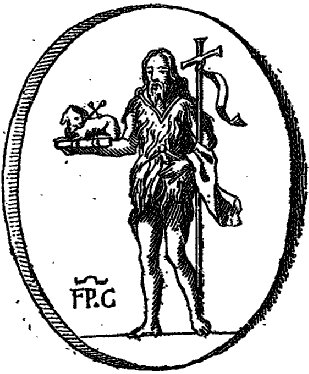
FIGURE XVII
(in Nummus aereus veterum Christianorum, F.P.C.)La figure XVII exprime tous les emblèmes de l'Art sacré. Mais notre attention se portera d'abord sur la peau de chameau qui sert de vêtement à Jean. Le chameau, compagnon du désert, a été identifié par le Zohar comme ayant quelque rapport avec le dragon et le serpent. Nous en avons un exemple avec l'un des bas reliefs que l'on trouve à l'Hôtel Lallemand [Bourges]. Par ailleurs, certains textes établissent un lien de cabale entre le chameau [kamhloV] et les camilles [KamilloV], serviteurs des rois qui transmettent la philosophie hermétique. En alchimie, le serviteur du roi ne saurait être que le christophore, identifié par Fulcanelli à Offerus [saint Christophe, cf. Tarot alchimique]. Saint Christophe permet à l'enfant Jésus de franchir un fleuve, ou si l'on préfère, de passer l'obstacle de la dissolution : c'est Eurysthée lâchant sa colombe à la sortie du Pont-Euxin ; c'est l'irisation où les couleurs de la queue de paon annoncent la prochaine blancheur. Cette peau de chameau a donc exactement la même valeur que la robe de palmier de saint Paul [cf. retable d'Issenheim]. C'est l'artifice du Mercure ; on peut en donner le nom vulgaire puisqu'il doit s'agir d'un silicate ou d'un alumino-silicate [cf. compendium]. C'est là le véritable sens du mot Ammon, vu sous une optique alchimique. Il ne s'agit point de notre chlorhydrate d'ammoniaque comme l'avait dit de façon charitable E. Canseliet dans son Alchimie expliquée sur ses Textes classiques. Tel était d'ailleurs le sentiment de Berthelot dans son Introduction à la Chimie des Anciens. Dans le tome I des Alchimistes Grecs [Robert Halleux, 1981, Les Belles Lettres], le sel ammoniac [alV ammoniakoV] qui figure sur les mss de Leide, est considéré comme un sel produit par l'oasis d'Ammon, en grosses pièces opaques parfois transparentes, avec goût styptique : il s'agit vraisemblablement de gypse et de chlorure de sodium [sur le gypse, cf. réincrudation. Rappelons qu'il s'agit d'un sel homonyme - envisagé par cabale - de l'alun]. Ajoutons que le sel ammoniac est mentionné dans le § 83 d'une fabrication d'asèm [et qu'il est fait mention de sel de Cappadoce à utiliser en lieu et place du sel ammoniac, cf. Chimie des Anciens II, note 41]. Depuis lors, l'art grec et l'art latin ont souvent remplacé le vêtement de poils de chameau par une toison de laine ou par une peau de chèvre mais cela n'a pas modifié le symbolisme qui se rattache à cet emblème.
Nous avons déjà insisté sur l'agneau ; mentionnons toutefois le signe x qui est situé au-dessus de l'agnus castus, posé sur le livre. Ce x peut aussi bien être une croix pattée que le signe dont parle Fulcanelli, dans le Myst. Cath., qui est disposé sur la surface du dissolvant canoniquement préparé et que le grand Adepte a comparé au gâteau des Rois, imaginant ainsi une superbe allégorie basée sur le thème de la fève [considérée comme le Soufre, cf. Symboles alchimiques I]. Intéressons-nous à présent au symbole zodiacal de la Balance qui est situé au-dessus de la signature du mystérieux auteur de cette gravure : FP. C. Il ne s'agit pas, en fait, du signe zodiacal, mais du signe alchimique qui marque tout ce qui a trait à la sublimation [cf. en recherche]. Dès lors, il est possible d'essayer de déterminer ce qui se cache derrière ces trois lettres. F peut être le signe du fer ; quant à P.C, il pourrait s'agir de pierre calaminaire : calamina renvoie à la Lydie [cf. lydius lapis, pierre de touche, supra]. Et la pierre de touche renvoie elle-même au fondement de tout le magistère, c'est-à-dire à la TERRE. Bien sûr, il ne s'agit là que de conjectures gratuites dont nous ne faisons que supputer la signifiance hermétique. Bien loin de nous l'idée de voir dans ce nomogramme FP.C une intention qui n'y serait pas. Voyons à présent la croix supportée par le bras gauche de Jean : nous y voyons par le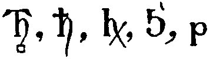
curieux mouvement du phylactère qui s'y trouve attaché le signe de Saturne. Voyez le second hiéroglyphe en commençant par le gauche et vous y verrez à très peu près dessiné le symbole que l'on aperçoit à la figure XVII. L'association de Saturne, tenu du membre supérieur gauche, et de l'agneau crucifère, tenu du membre supérieur droit, nous donne la clef du début du Livre Secret d'Artephius : « Antimonium est de partibus saturni... » ce que les alchimistes traduisent par : « l'antimoine est des parties de Saturne... » [in Philosophie Naturelle de Trois Anciens Philosophes, etc., etc. Paris, chez Laurent d'Houry, 1682]. Le rapprochement que nous faisons entre l'agneau et le signe zodiacal du Bélier est rendu possible par l'agnus castus, c'est-à-dire l'agnus Phrixeus, l'agneau de Phrixus qui symbolise la constellation. Or, Newton a écrit, en commentant les écrits du Philalèthe, de Flamel et d'Artephius :
« ...par le pouvoir de notre soufre qui gît caché dans l’antimoine, car l’antimoine était dénommé Ariès par les Anciens. Parce que Ariès est le premier signe du zodiaque dans lequel le Soleil commence à être exalté et que l’or est surtout exalté dans l’antimoine ». [Keynes, MS 19, f. 1r]
N'en doutons pas : c'est le faîte de l'oeuvre et le plus grand secret des Sages qui est évoqué dans ces lignes car très rares sont les Philosophes par le feu qui, assurément, surent tirer l'Acier du ventre d'Ariès. Sur la confusion de Newton entre l'aimant des Sages et le régule étoilé d'antimoine, cf. nos études de symbolisme général. Il nous reste à parler du livre fermé : le Mutus Liber - bible illustrée des alchimistes - est là pour faire voir que, par de simples images qui expriment, au demeurant, un complexe symbolisme, les arcanes peuvent être devinés et les serrures des métaux peuvent être ouvertes afin que leur très précieux soufre se puisse recueillir en cultivant Patience, Force, Tempérance et Justice [cf. Gobineau de Montluisant].
Le second de ces monuments artistiques est un petit tableau, peint sur bois de cèdre, de la largeur de la main, que Paciaudi, étant à Malte, acheta à un marchand grec. Le docte antiquaire attribue au XIIIe siècle cette peinture dont nous avons donné la gravure en tète de la première partie de cet ouvrage. Les inscriptions grecques qui y figurent « Saint Jean Précurseur » et « Voici l'Agneau de Dieu » sont écrites perpendiculairement; ce qui témoigne,ainsi que la forme des lettres... 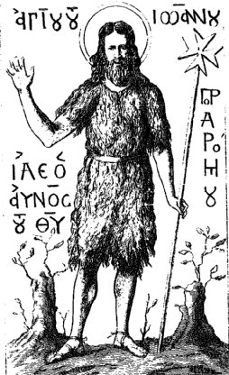
FIGURE XVIII
(saint Jean Précurseur)
... et des accents, de l'antiquité de cette œuvre intéressante. Dans ce petit tableau on aperçoit, de chaque côté du saint, un arbuste revêtu de jeunes pousses. Ce n'est pas sans intention que le peintre les a placées là, car elles peuvent passer pour une des caractéristiques de saint Jean-Baptiste. Elles rappellent sa vie au désert, et surtout sa nourriture, qui se composait, au dire de plusieurs commentateurs, non pas seulement de sauterelles ( akrideV ) mais de la tendre et flexible extrémité d'une certaine espèce d'arbustes, et d'herbes même, dont la nom se rend par le même mot. Légende artistique III Le tableau évoque fortement par les deux arbustes disposés de part et d'autre de Jean la première gravure du Donum Dei. Que le lecteur en voit les différentes versions : il se convaincra que les deux arbustes sont identiques au Roi et à la Reine de l'oeuvre et que Jean figure le Mercure. Ce n'est pas tout : en alchimie, les jeunes pousses ont une importance due à la matière même de leurs écorces, très riches en carbonate de potassium [borith des Anciens] dont est fait, pour partie, le bain des astres. Quant à la nourriture de Jean, les sauterelles [akrideV], elle a fait l'objet de maints commentaires ; le diacre Pantaléon, écrivain du IXe siècle, dit que saint Jean se nourissait de sauterelles et de jeunes pousses. Saint Isidore de Péluse prétend que les personnes qui, par le mot acrides, entendent des êtres vivants, commettent une grave erreur. Voyons cela.
Telle est aussi l'opinion de Nicéphore Calliste, et c'est également le sens de la version Éthiopienne. Les Éthiopiens, du reste, à l'exemple d'autres peuples encore, emploient les acrides comme aliments; aussi Eustache de Thessalie les nomme-t-il Acridiphages, et Diodore Ulophages. D'après ce dernier historien, on les voit sortir de leurs demeures avec leurs familles pour aller chercher leur nourriture qu'ils demandent aux tendres tiges des arbres. Le sentiment d'Isidore de Péluse est partagé par le cardinal Cajétan et l'illustre orientaliste Bochard. Il est fortifié par l'autorité du célèbre cardinal de Vitri. Ce prélat, après avoir décrit, dans son Histoire de Jérusalem, le désert de Saint-Jean-Baptiste, rapporte un entretien qu'il eut avec un moine d'un couvent voisin de cet endroit et soumis à une règle très-sévère. Interrogé sur ce qu'il fallait entendre par les acrides dont se nourrissait la Précurseur, la religieux répondit, sans hésiter, qu'on servait très-fréquemment au réfectoire des herbes que les moines appelaient Langustae, en d'autres termes Locustae (mot latin qui veut dire sauterelles). Il ajouta qu'on les récoltait en grand nombre aux environs du monastère, et qu'elles étaient de l'espèce de celles dont se nourrissait saint Jean. Légende artistique IV Une autre opinion, et c'est celle à laquelle nous allons nous rallier, tient que ces acrides étaient des écrevisses (cancri) que saint Jean se procurait dans le Jourdain. En latin, locusta signifie tout à la fois écrevisse et sauterelle et en italien, on se sert aussi du mot sauterelle (locusta) pour désigner une langouste. On peut encore, pour abonder dans ce sens, citer Bède le Vénérable qui signale, sur les bords du Jourdain, dans les premiers siècles chrétiens, l'existence d'un monastère dont la chapelle, placée sous l'invocation de saint Jean Baptiste, avait pour soubassement quatre écrevisses en pierre. Quant au Jourdain lui-même [cf. figure XVI], on le représente sous les traits d'un vieillard, couronné de roseaux, et, dans la mosaïque de Sainte-Marie in Cosmedin de Ravenne, l'artiste a remplacé la couronne de joncs par deux pattes d'écrevisse. En quoi cela intéresse-t-il notre propos ? Le mot écrevisse [cancri] désigne le signe zodiacal du Cancer, époque de l'oeuvre où la Lune brille en plein, c'est-à-dire époque où la chaleur est proprement caniculaire et où le Mercure trouve son efficacité maximale. Nous avons déjà signalé à de multiples reprises la relation hermétique qui relie Jean au Mercure des alchimistes ; aussi le rapport de Jean au Cancer [Ecrevisse, cf. zodiaque alchimique] ne saurait nous étonner. Et les traits prêtés au Jourdain portent évidemment la marque du Mercurius senex.
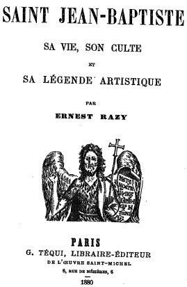
FIGURE XIX
(frontispice du livre d'Ernest Razy sur saint Jean Baptiste)
L'image ailée du Précurseur rappelle le passage suivant d'Isaïe : (40, 31): « Qui sperant in Domino adsument pennas, sicut aquilae current et non deficient, » et surtout, celui de Malachie: Ecce ego mitto angelum meam..» Comme sur le sceau du cardinal Bessarion, le Saint, dans les Ménés, élève la main droite en signe d'allocution, et, de la gauche, tient une croix et an phylactère où sont écrits ces mots : « Faites pénitence, car le royaume de Dieu est proche. » Dans le premier geste les artistes grecs font parfois réunir à saint Jean-Baptiste le pouce à l'annulaire ; aussi quelques personnes ont supposé que, dans ces compositions, le Précurseur donne sa bénédiction à la manière grecque. Supposition, d'ailleurs, assez motivée, puisque, dans un ouvrage intitulé: « De Canonisatione, » le pape Benoit XIV décrit une ancienne mosaïque où les souverains Pontifes exécutent ce geste pour bénir le peuple. Toutefois, en ce qui concerne saint Jean-Baptiste, on croit plus généralement à un geste oratoire, semblable à celui par lequel les orateurs anciens commençaient leurs discours et saluaient leurs auditeurs. L'image ailée du Précurseur omait également le reliquaire byzantin contenant primitivement le bras gauche de saint Jean-Baptiste que l'on conserve à Perpignan. Et remarquons incidemment la précaution, prise par l'auteur des vers grecs qni figuraient sur ce reliquaire, pour ne pas être confondu avec ceux aux yeux desquels le Précurseur passait pour un ange mortel: « Tu portes des ailes, dit le poète, en signe de ta ressemblance avec les anges : être matériel, pour ainsi dire immatériel, selon les paroles du Sauveur. » Molanus, théologien catholique flamand dn XVIe siècle, rapporte avoir vu à Gand et à Bruges d'anciennes images dans lesquelles le Précurseur ailé foulait aux pieds le cruel Hérode, pour montrer que son trépas même fut une victoire remportée sur le tyran. L'image ailée de saint Jean-Baptiste se voit aussi sur des dyptiques décrits par Gori, ainsi que sur des bas-reliefs cités dans le Trésor de Glyptique. Légende artistique V Ces ailes, il faut le noter, sont aux confluents des deux branches du Jourdain ; elles expriment les deux élements AIR et EAU, et les intermédiaires entre le ciel et la terre que sont les anges et les aigles. Remarquons à ce sujet la proximité phonétique entre le talon [pterna] et l'oiseau de proie [pterniV] expliquant entre autre la raison de l'apposition d'ailes aux talons du Mercure que l'on voit sur les figures du Livre d'Abraham Juif que Flamel prétendait détenir [cf. Figures Hiéroglyphiques et gravures]. Ou encore celle entre le fond d'un vase [pterniV] et ce même oiseau : on est alors conduit à se poser la question de savoir si les fameuses sublimations philosophiques de Philalèthe, connues sous le nom « d'Aigles volantes » ne seraient pas plutôt des précipitations d'une substance au fond du vase. C'est là un des mystères les plus secrets du magistère mais voilà qui expliquerait, du coup, les rapports singuliers unissant la terre au ciel dans les allégories des vieux philosophes. Remarquons que le mot pterux, qui désigne à proprement parler l'aile, représente dans d'autres acceptions la carapace d'une tortue ou la frange d'un vêtement ou encore les appendices d'une cuirasse ou, enfin, le nom d'ErwV [PteroV, le dieu ailé].
b. la tête tranchée mise dans un plat
Ayant déjà eu l'occasion [cf. supra] de traiter ce sujet, nous allons nous attacher à identifier la materia prima qui se cache sous les traits de Jean et qui aboutit, fatalement, à la séparation telle qu'en parlent les traités alchimiques. C'est aborder le thème dit de l'Invention du Chef sacré du saint Précurseur.
Voici d'abord la légende qui se rattache à la première Invention. Sozomène le Scolastique nous en fait le récit dans son Histoire Ecclésiastique, qu'il a écrite en grec. Cet auteur, né en Palestine, au commencement du V siècle, et mort à Constantinople vers l'an 450, rapporte qu'au temps de Julien l'Apostat et non loin de celui de Valens, le Chef de saint Jean-Baptiste fut découvert à Jerusalem par quelques moines de la secte du patriarche Macédonius, qui l'emportèrent avec eux en Cilicie. A cette nouvelle, l'Empereur Valens, qui régnait alors, donna l'ordre de le transporter sur-le-champ à Constantinople. Ses émissaires le chargèrent sur un char léger qu'ils conduisirent sans difficulté jusqu'à un endroit nommé Pantichion, distant de Chalcédoine d'environ quinze milles. Là, les chevaux refusèrent d'avancer; leurs conducteurs ne purent, malgré tous leurs efforts, imprimer au char le moindre mouvement. Quel parti prendre ? Ils envoyèrent, en toute hâte, prévenir l'Empereur du miracle qui venait de s'accomplir, et l'auguste Chef fut déposé dans un village voisin, nommé Cosilas, aujourd'hui Cosla. Il y demeura jusqu'au règne de Théodose.
La divine Providence semblait avoir réservé à la piété de ce grand prince la faveur de faire transporter la précieuse relique dans la capitale de ses États. Théodose (c'est toujours Sozomène qui raconte) se rendit dans ce but à Cosilas, mais ce ne fut pas sans de grandes difficultés qu'il parvint à se faire remettre le chef sacré du Précurseur. La Supérieure du couvent, qui en avait la garde, ne pouvait se résoudre à le céder, même à l'empereur. Vaincue cependant par les instances impériales, elle finit par y consentir, et Théodose porta lui-même cette tête auguste à Chalcédoine. Plus tard ce prince la fit apporter à Constantinople et déposer dans une magnifique église, bâtie par lui expressément en l'honneur du Précurseur, dans le quartier de l'Hebdomum, endroit ainsi nommé parce qu'il se trouvait à une distance de sept milles de la cité, avant l'agrandissement de cette dernière. La dévotion des Grecs pour saint Jean-Baptiste alla toujours en augmentant, depuis le moment surtout où Théodose vit, grâce à ce grand saint, un miracle signalé s'accomplir en sa faveur. [...]Invention du Chef de Jean I On raconte une histoire semblable à propos de la relique de saint Etienne [cf. vitraux de Bourges]. Le mot de Chalcédoine résonne toujours d'une manière particulière aux oreilles des alchimistes : ils y voient leur stimmi, leur larbason, leur stibi, en un mot leur antimoine.
Invention du Chef de Jean II Plusieurs points méritent quelque commentaire : le premier, c'est ce pauvre potier qui subtilise le Chef sacré : c'est ce qu'un cabaliste espiègle aurait pu appeler un tour de potier... Il cache la sainte relique puis un nommé SpeoV la découvre à son tour ; son nom qui signifie grotte indique le lieu exact, précis où l'impétrant peut retrouver cette mystérieuse materia prima. Viennent ensuite les dates d'invention : 18 février, 24 du même mois de cette année 483 puis une autre date : le 29 août. La première correspond à peu près à l'entrée du Soleil dans le signe des Poissons. Par cabale, ce signe est celui où s'opère la phase finale de réincrudation du Soufre, c'est-à-dire celle où la lumière jaillit définitivement des ténèbres [cf. zodiaque alchimique, car le symbolisme attaché aux Poissons est plus que cela]. Comment l'Invention du Chef de Jean ne pourrait-il pas convenir à cet événement ? Quant au 29 août, il correspond au passage du Soleil dans le premier décan de la Vierge [cf. Atalanta, XLVII]. De ces deux versions, les historiens semblent retenir que la première seule pourrait être véridique. Quoi qu'il en soit, la date de février s'accorde avec la cabale hermétique beaucoup plus qu'avec celle d'août.
L'église d'Amiens fut particulièrement favorisée sous ce rapport: elle eut en partage le Chef de saint Jean-Baptiste. L'insigne relique échut à un noble ecclésiastique, natif du diocèse d'Amiens, et non point d'origine grecque, comme quelques auteurs l'ont écrit. Il s'appelait Walon de Sarton, du nom de la seigneurie de Sarton, village situé près de Doullens, à six lieues d'Amiens. D'abord chanoine de l'église collégiale de Saint-Martin de Picqnigny, il prit la croix avec les barons français dans le dessein de passer avec eux en Terre-Sainte. Après la conquête de Constantinople, Walon obtint un canonicat en l'église Saint-Georges. II avait en, tout d'abord, pour part de bien, d'importantes reliques, notamment le Chef de saint Christophe. Cependant, plein de déférence pour les ordres des prélats, il les remit à l'évêque de Troyes, qui en avait été constitué le gardien, Le saint homme fut ainsi privé de ces inappréciables richesses; niais Dieu réservait à sa piété d'amples dédommagements. Un jour (la veille de la fête de la Nativité de la Sainte Vierge), il se promenait à travers les ruines d'un vieux palais contigu à l'église Saint-Georges, lorsqu'il remarqua une fenêtre bouchée avec du foin et obstruée par une quantité de matériaux entassés les uns sur les autres. Tout à coup une pansée traverse son esprit. Peut-être ce désordre apparent protége-t-il des reliques de saints contre la profanation ? Une pieuse curiosité le saisit, puis le porte à remuer ces pierres amoncelées. Quelle n'est point sa joie de trouver deux vases dont l'un contient le doigt et l'autre le bras de saint Georges martyr ! Craignant d'être surpris, ce jour là, au milieu de ses recherches, il remet en place son inestimable trésor et se retire le cœur rempli d'émotion. Ce vieux palais, désigné par les actes de la cathédrale d'Amiens, comme contigu à l'église Saint-Georges, n'est autre, dit du Cange, que celui qui fut bâti par l'empereur Basile le Macédonien, près de l'arsenal de Constantinople, appelé Mangana. Il était entouré d'une vaste plaine ombragée d'arbres. A différentes reprises, les empereurs en avaient fait leur résidence. Ce fut donc dans les ruines du palais de Mangana que Walon découvrit d'abord les saintes reliques de saint Georges. Choisissant le moment favorable, il y retourne le lendemain, et, fouillant plus avant, il trouve, cette fois, deux grands plats
d'argent avec leurs étuis. Mais, dans la crainte encore d'être surpris, il se contente de les placer dans un endroit plus écarté du palais, se promettant bien d'aller les reprendre durant la nuit. Le jour suivant, avant le lever du soleil, il se rend, une dernière fois, aux ruines. Il retrouve ses chères reliques, s'en empare avec amour, et les emporte dans sa cellule. Là, tout à loisir, il ouvre les étuis, et, d'après l'inscription d'un des reliquaires, sur lequel on lisait : « AgioV GewrgioV » il reconnaît, avec un indicible bonheur, qu'il est en présence du chef de saint Georges ! L'inscription placée sur l'autre reliquaire : « AgioV IwannhV prodromoV » était écrite en abrégé; aussi, à son grand désespoir, Walon de Sarton ne la déchiffra-t-il pas tout d'abord. Ce ne fut que quelques jours après, en se livrant à des rapprochements attentifs dans d'autres églises où se distinguaient les mêmes caractères, en regard de l'effigie du Précurseur, qu'il comprit toute l'importance de sa découverte. L'autre Chef était celui de saint Jean-Baptiste ! Selon toute probabilité, l'insigne relique avait été transférée du monastère de Studius, dont nous avons parlé précédemment, à l'église Saint-Georges magnifique basilique élevée, à grands frais, par
Constantin Monomaque.Les flots bleus du Bosphore baignaient ses pieds de marbre, et c'est à cause d'elle que le détroit fameux fut surnommé « Bras de Saint-Georges » par les Grecs et les Latins. Constantin Monomaque, pour la pendre à jamais célèbre, y fit transporter un grand nombre de reliques. L'un de ses successeurs, Jean Cantacuzène, celui qui quitta la pourpre impériale pour prendre, dans cette église même, l'habit monacal, remarque que, de son temps, il s'en trouvait une grande quantité. Aussi les écrivains les plus sérieux ne doutent-ils pas un instant que le Chef de saint Jean-Baptiste ne fit partie des reliques dont Constantin enrichit cette basilique. Ils pensent que, pour ne pas dépouiller entièrement l'église de Studius de son précieux dépôt, ce prince lui en laissa une partie, se contentant de prendre la principale, la face, celle même qui fat trouvée par Walon de Sarton. Le saint homme remercia Dieu du fond du cœur d'avoir mis entre ses mains la plus précieuse relique du plus grand de ses saints, et prit, aussitôt, la résolution de l'emporter dans son pays. Mais, comme les reliquaires étaient difficiles à transporter à cause de leur volume et de leur poids, il s'avisa de rompre les deux plats, et d'en vendre les morceaux, faisant vœu d'employer, dès qu'il le pourrait, l'équivalent en œuvres pieuses. Il conserva seulement les deux petits plats qui formaient comme le second encadrement des Chefs de saint Jean-Baptiste et de saint Georges. Puis il s'embarqua, le dernier jour de septembre, et des vents heureux ramenèrent bientôt a Venise.Invention du Chef de Jean III Là encore, il est remarquable de voir combien la légende sacrée peut être parallèle à la cabale propre à l'Idée alchimique. Ce Walon de Sarton fait coup double, puisque non seulement il invente la relique de saint Georges mais aussi celle de saint Jean Baptiste ! Comment croire à de pareilles choses, autrement qu'avec l'esprit ou par le coeur ? Ces trouvailles de Sarton ont quelque chose des deux vases dont parle Cyliani en son Hermès Dévoilé, écrit au XIXe siècle, ouvrage qui n'a pas livré encore tous ses secrets. Cyliani y écrit
« Je vis alors deux superbes vases en cristal reposant chacun sur un piédestal du plus beau marbre de Carrara . L'un de ces vases était en forme d'urne, surmonté d'une couronne en or à 4 fleurons; on avait écrit en lettres gravées dessus: Matière contenant les deux natures métalliques. L'autre vase en cristal était un grand bocal bouché à l'émeri , d'une forte épaisseur, on avait gravé pareillement dessus ce qui suit: Esprit astral ou esprit ardent, qui est une déjection de l'étoile polaire. Ce vase était surmonté d'une
couronne d'argent ornée de 9 étoiles brillantes. »Nous affirmons que le vase fait en marbre de Carrare cache la Terre alchimique et qu'elle peut être rapprochée de la relique de Georges, par l'assonance phonétique entre GewrgioV [Georges] et gewrgion [champ cultivé] où l'on peut voir la terre feuillée des Sages, appelée encore terre sigillée [l'ouverture de cette terre est à l'image de saint Georges terrassant le dragon, allégorie de la disparition du vieux Mercure]. L'autre vase ressortit du dissolvant puisqu'il est appelé esprit astral ou esprit ardent : il se rapporte à saint Jean Baptiste. Poursuivons.
Invention du Chef de Jean IV On ne saurait, en vérité, ajouter quoi que ce soit à cet exposé magistral. La figure XXII eut pu dignement figurer dans la Monade Hiéroglyphique de John Dee. Au plan de la cabale, on pourra toutefois faire remarquer le O qui encadre le A : il s'agit du Mercure entourant le chiffre de l'AIR [il s'agit de la sublimation]. Les trois lettres suivantes sont celles du Soufre [IOV]. On peut trouver un monogramme semblable sur les battants d'airain des portes
de l'église Saint-Paul, à Rome, in via Ostiensi, a côté de l'image du Prophète Sophonias, le mot PROFHTHZ est figuré sur cette figure XXIII :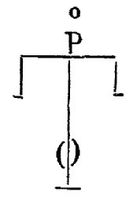
FIGURE XXIII
(prophète Sophonias)On en retrouve toutes les lettres en les détachant. les unes des autres. L'apôtre saint Thomas est aussi représenté deux fois, et le mot alloV est exprimé par un
A dans un grand O. Du Gange, qui nous fournit ces détails, donne page 132 du Traité historique du Chef de saint Jean-Baptiste le dessin du reliquaire ; les Bollandistes l'ont également publié, tome IV, p. 750, des Acta Sanctorum, mois de juin. Voir, en outre, plusieurs plombs commémoratifs dans l'ouvrage de M. A. Forgeais (1863. Pèlerinages, tome II) et dans les Mémoires des Antiquaires de Picardie, 1865. tome XX. La relique de saint Jean provoqua, au dire des historiens des miracles redoublés à Amiens. En effet, non seulement elle guérissait du « mal de saint Jean », c'est-à-dire de l'épilepsie, mais plus encore, elle préserva par deux fois Amiens - dans une certaine mesure - de la dévastation provoquée par la peste. La relique de saint Jean fonctionnait en somme comme une espèce de pierre philosophale spirituelle... Il suffisait qu'une procession se mît en place, exactement comme celles que décrit Fulcanelli au début du Myst. Cath.. Plusieurs rois, au fil des siècles, donnèrent leur obole à la relique du saint. Citons Louis XI par exemple :
Louis XI, à son tour, signala sa dévotion spéciale envers le Précurseur et ses saintes reliques, par le présent qu'il fit, en 1474, de son rubis-balais monté sur or. C'était un joyau d'un grand prix, à cette époque surtout; on l'attacha au couvercle du reliquaire. Le roi joignit à ce don 1,200 écus d'or destinés au service divin. D'après l'inventaire, Louis XI donna encore un grand bassin octogonal en vermeil et émaillé dans lequel on plaçait le reliquaire, lorsqu'on en faisait la montre. Invention du chef de saint Jean V Mais voici venir les heures sombres de la Révolution française où tant de décapitations vinrent s'ajouter à la décollation de Jean. L'une des plus injustes, s'il en fut de justes, est à coup sûr celle de Lavoisier dont on a examiné quelques travaux dans les sections réincrudation [gypse] et humide radical métallique [serrures pour ouvrir le corps des métaux]. Heures riches pour l'éveil de la démocratie et heures sanglantes de la Terreur ! Voici ce qui se passait alors à Amiens :
Au mois de novembre 1793, en vertu du décret de la Convention du mois de septembre précédent, le Chef de saint Jean fut extrait du plat d'or où il se trouvait et dépouillé des bijoux dont il était orné. Le cristal où s'étaient posées les lèvres de saint Louis se fendit pendant cette sacrilège opération. Les pillards jetèrent dans le creuset les bijoux et le beau reliquaire byzantin; mais la relique elle-même et sa précieuse enveloppe furent sauvées par les soins d'un maître perruquier, du nom de Lescouvé, qui les cacha chez lui, au péril de sa vie. Lescouvé a raconté, dans une déclaration aussi saisissante que naïve, comment, étant maire d'Amiens, en 1793, il fut délégué par le représentant Dumont, en mission dans cette commune, pour dépouiller la cathédrale de tout ce qu'elle renfermait de précieux. Il nous apprend que plusieurs personnes dont il cite les noms entrèrent avec lui dans le chœur ; qu'on retira des châsses les reliques de différents saints vénérés à Amiens, et qu'une vive discussion s'éleva pour savoir où on les jetterait; mais que Iui, persista à les conserver, se promettant bien de les rendre à la vénération des fidèles dans des temps plus heureux. «J'ai également sauvé,ajoute-t-il avec la plus noble simplicité, le Chef de saint Jean-Baptiste, que j'ai remis dans la cathédrale le 29 juin 1795, jour où j'ai fait ouvrir la dite église. Je ne puis vous exprimer les horreurs qui s'y sont commises, et les menaces que j'ai eu à essuyer de la part des Vandales et des impies; on me menaçait, à chaque instant, de la guillotine ; cela ne m'a pas empêché d'aller mon train !» Trivialité sublime ! car, dans ces temps de terreur, les pieuses intentions de ce brave homme, connues de tous, l'exposaient, à chaque instant à payer de sa tète, comme le saint Précurseur, le courage dont il avait fait preuve. L'oubli de la postérité ne saurait atteindre de tels dévouements, et le nom de Lescouvé ne périra pas. Le Chef de saint Jean-Baptiste, recouvert de son antique cristal, fut déposé par son courageux sauveur dans un humble plat d'étain. Il y demeura jusqu'au 6 janvier 1820. A cette époque, Mgr de Bombelles, évêque d'Amiens, donna, pour le remplacer, un plat d'argent de forme ovale dans lequel ou enchâssa la relique. Ou déposa sous ce plat, avec l'authentique du vénérable prélat, la déclaration de Lescouvé, qui fut retrouvée cinquante-cinq ans plus tard (1878), lorsque l'auguste évêque qui, récemment encore, occupait le siège de saint Firmin, Mgr Bataille, ordonna de retirer la relique du modeste plat d'argent pour la placer dans un cadre plus digne d'elle. Le nouveau reliquaire rappelle, autant que possible, le reliquaire byzantin qui l'avait si longtemps et si magnifiquement abritée. « II se compose, lisons-nous dans une chronique locale, d'un plat circulaire en vermeil, dont le centre, légèrement creusé au marteau, reçoit le cristal de roche qui couvre le précieux Chef. La bordure du plateau est formée de trois parties : une vignette de fleurs de lis en relief, se dirigeant du centre à la circonférence ; un bandeau plus large, semé de pierreries ; une nervure à perles d'or en saillie, qui arrête la ligne intérieure de la bordure. Au bas du plat est un écusson émaillé, aux armes de France, entouré de quinze grosses perles fines, surmontées d'une émeraude et d'une topaze rosé. « Le cristal de roche, seul reste de l'ancien reliquaire, est serti dans une élégante crête de feulliages ciselés en relief. Cette crête a respecté les tracas que l'impiété révolutionnaire a laissées sur le cristal. On sait que, lorsqu'il fut violemment détaché du plat d'or, le jour de la spoliation du Trésor de Notre-Dame, il se produisit divers éclats à son rebord supérieur et une fissure qui est, pour ce précieux débris des siècles passés, ce qu'est la trace d'une glorieuse blessure pour un vaillant guerrier. Or, la sertissure suit parfaitement les irrégularités du rebord et permet d'apercevoir les quelques petites brèches qui s'y trouvent. L'insigne relique, placée sous ce cristal, est enveloppée d'une lame de vermeil qui en prend exactement les contours et se termine en calotte hémisphérique. A la base de cette calotte un bandeau, d'un centimètre de largeur, est semé de pierres fines. »
Sur la calotte, un médaillon représente l'image de saint Précurseur montrant le Sauveur du monde. Ce travail est exécuté en émaux champ-levé,et les visages de Nôtre-Seigneur et de saint Jean-Baptiste sont peints sur émail. Les inscriptions grecques de l'ancien reliquaire se détachent en or sur le fond bleu. Contre la poitrine du saint brillent, en groupe, une émeraude, deux topazes roses et une perle. « Enfin un petit soubassement, à deux degrés, supporte l'auguste Chef; il est également enrichi de pierres fines. » Sous le plateau se lit, gravé au burin en lettres onciales, l'inscription suivante, placée entre les armes de Mgr. Bataille et celles du chapitre d'Amiens:
HOCCE IN DISCO
BONIS DATIS CLERI FiDELIUMQUE CONFECTO
AD FORMAM VETERIS
GRASSANTE PERTURBATIONE GALLICA
NEFARIE RAPTI
VERNRANDAM FACIEM S. JOANNIS-BAPTISTAE
AMANTISSIME REPOSUIT
RB. DD. LUDOVICUS BATAILLE, BPISC. AMB.
UNA CUM CAPITULO ECCLESIAE CATHEDRALIS
ANNO CHRISTI M.D.CCCl.XXVI
DIE JUNII XXIV
IN NATIVITATE SANCTI PRAECURSORIS.Ce magnifique reliquaire a été complété en 1877 par un couvercle de vermeil ayant la forme même du cristal qu'il recouvre entièrement. Sur ce couvercle se voit une peinture en émail très artistiquement exécutée, représentant la tête du Précurseur. Ô sainte relique, dix-huit fois séculaire, car votre âge est celui du christianisme lui-même, ô vous la plus auguste des reliques, puisqu'au ciel appartient de posséder sans partage les corps glorieux de Jésus et de Marie ressuscités, puissiez-vous toujours, désormais, loin desprofanateurs et des impies, demeurer en paix sous ces voûtes bénies qui, depuis six siècles, vous abritent, et protéger à jamais Amiens et la France !
[Une parcelle du Chef est exposés dans un gracieux monument de style ogival, orné de peintures et de dorures, ainsi que d'un fort beau médaillon représentant la Décollation de saint Jean-Baptiste. On y voit les écussons de Richard de Gerberoy, de l'évêché et du chapitre d'Amiens, et de Mgr Mioland, sous l'épiscopat duquel il fut exécuté.]
Culte de saint Jean I Comment ne pas voir une singulière coïncidence entre toutes ces têtes déchirées, arrachées, et le courage qu'ont eu certains de vouloir conserver, intacte, la précieuse relique de Jean le Baptiste ? La figure XXI est, s'il était possible, encore plus touchante, de ce que nous venons de lire mais la question reste sans réponse : est-ce là le chef de Jean ? D'un autre côté, est-on plus assuré de l'existence de la pierre philosophale que de ce que ce morceau de crâne ait bien appartenu au Précurseur ? Pour terminer sur une note plus en rapport direct avec notre sujet, nous prendrons un sujet italien :
Culte de saint Jean II La figure XXIV nous présente l'alpha et l'omega de l'Art. La croix qui figure le creuset, la Passion ; qui représente encore l'allégorie trenscendantale de la dissolution - à moins qu'il ne s'agisse bien plutôt de la sublimation, cf. retable d'Issenheim - ; qui représente enfin la Monade, telle que la conçoit John Dee : un abrégé de l'Oeuvre. Puis, nous trouvons le diadème, curieusement disposé entre la croix et la couronne. Ce serait oublier que l'Artiste doit passer par les trois couronnes de perfection - cf. le Triomphe Hermétique de Limojon - pour avoir dans l'ordre successif des opérations la couleur noire qui est la TERRE, la couleur blanche qui est l'AIR et la couleur rouge qui correspond au FEU. On aura remarqué qu'il manque un élément : l'EAU. C'est l'artifice du Mercure que d'une TERRE soit fait de l'EAU que l'Artiste doit ensuite sublimer et allumer ; c'est ici qu'il doit appliquer l'une des sentences de la Table d'Emeraude, afin qu'un mouvement de convection naisse de ce chaos, qui n'est divers qu'en apparence. L'impétrant n'aura alors qu'à appliquer l'une des équations que nous avons posée en conjecture dans la section Cristallogénie : il verra que son EAU résulte forcément d'un FEU auquel on supprime son AIR et auquel on ajoute une TERRE.